승무원 면접 준비에서 답변만큼 당락을 가르는 게 표정이에요. 이 글에서는 왜 내 표정은 내가 못 보는지, 그리고 카메라만 켜면 AI가 미소·시선·자세를 실시간 점수로 짚어주는 연습법을 실제 화면과 함께 보여드릴게요.
면접장에서 제일 많이 봤던 얼굴이 뭔지 아세요. 본인은 웃고 있다고 믿는데, 실제로는 굳어 있는 얼굴.
긴장하면 입꼬리가 먼저 내려가요. 그런데 정작 본인은 그걸 못 느껴요. 거울은 멈춰 있고, 실전은 떨리고, 카메라 앞 내 표정은 내가 볼 수가 없으니까요. 면접관 자리에 앉아 지원자를 마주 봤던 사람으로서, 이게 제일 안타까웠어요.
집에서, 카메라만 켜면 시작되는 실전 연습
그래서 이 기능을 준비했어요. 카메라만 켜면 AI가 내 얼굴을 실시간으로 읽어줍니다.
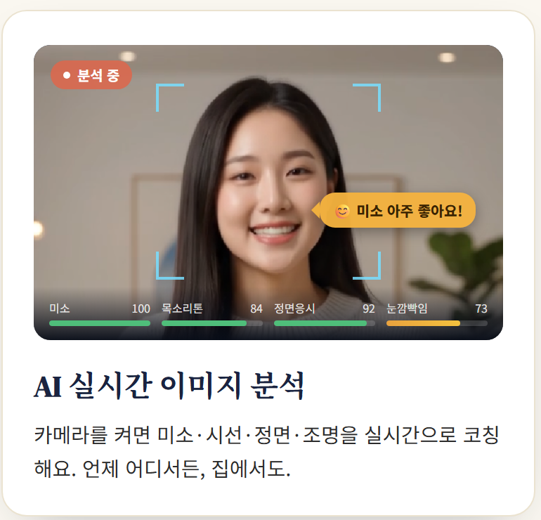
승무원 면접 표정, 왜 이렇게 중요한가요?
승무원에게 미소는 인상이 아니라 직무의 일부이기 때문이에요. 면접관은 답변 내용보다 먼저, 이 사람이 승객 앞에서 지을 얼굴을 봅니다. 그런데 긴장하면 입꼬리부터 내려가고, 정작 본인은 그걸 느끼지 못해요. 그래서 객실승무원 면접 준비는 답변 연습과 표정 연습이 반드시 같이 가야 합니다.
AI가 봐주는 일곱 가지
카메라를 켜는 순간부터, AI가 일곱 가지를 동시에 점수로 짚어줘요 — 미소, 정면 응시, 얼굴 수평, 어깨 균형, 시선(렌즈), 목소리 톤, 조명. 그리고 이 모든 걸 종합해 지금 내 첫인상이 몇 점인지 보여줘요.
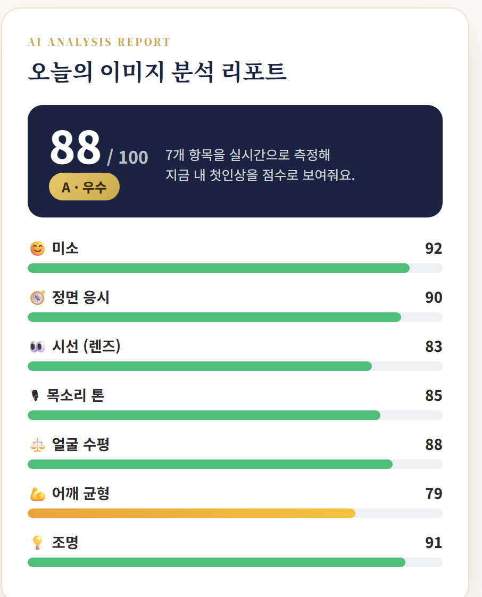
"잘하고 있겠지"가 아니라, 지금 내 상태가 숫자로 보여요
진짜 신기한 건 여기예요
가만히 무표정하게 있어 보세요. 그 순간 미소 점수가 뚝 떨어지면서, 입꼬리 바로 옆에 "입꼬리 조금만 더!" 하고 신호가 떠요. 활짝 웃으면 다시 "미소 아주 좋아요!"로 바뀌고요.
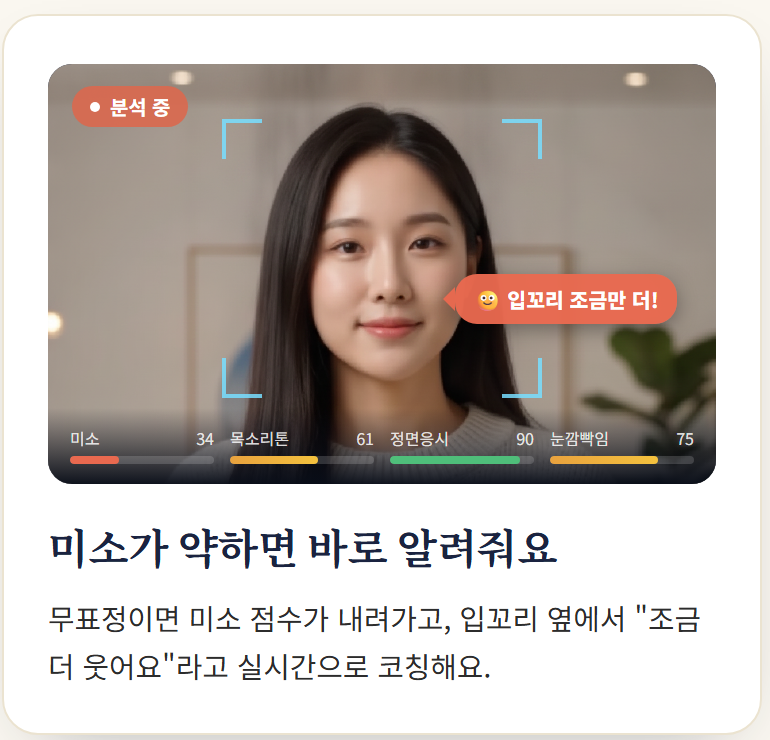
혼자 연습하는데도, 옆에서 계속 봐주는 사람이 하나 붙어 있는 느낌이에요. 표정이 풀리는 그 찰나를 놓치지 않고 바로 알려주니까요.
카메라 영상은 저장되지 않아요. 편하게, 실전처럼 마음껏 연습하시면 됩니다.
승무원 미소 연습, 목표는 이 얼굴이에요
승객을 맞이하는 승무원의 얼굴을 떠올려 보세요. 환하게, 편안하게, 저절로 올라간 입꼬리. 그 미소는 타고나는 게 아니라 만들어지는 거예요. 준비생에게 미소 연습이 선택이 아니라 필수인 이유가 여기 있어요.
매일 짓는 미소가, 결국 저 얼굴을 만듭니다
이제, 시대가 달라졌어요
예전엔 시간 맞춰 어딘가로 가서, 거울 앞에 앉아야 했죠. 지금은 카메라만 켜면, 집에서도 새벽에도, AI가 옆에서 봐줍니다. 장소도 시간도 상관없어요.
원더풀크루는 이 변화를 누구보다 먼저 만들고 있어요. 합격 준비를 정해진 시간표가 아니라, 24시간 여러분 손안으로 옮겨놓는 일이요. 언제 어디서든, 준비하고 싶을 때 바로 — 그게 지금의 승무원 준비예요.
승무원 면접 사진은 헤어·메이크업·정장·스튜디오까지 수십만 원이 드는 준비물이었어요. 이 글에서는 일상 사진 한 장으로 AI가 항공사 승무원 증명사진을 완성하는 방법과, 실제로 그 사진으로 합격한 사례, 그리고 면접 메이크업 컬러까지 미리 찾는 법을 실제 화면과 함께 보여드릴게요. 스튜디오 예약도, 비싼 촬영 비용도 없이 집에서 바로 준비할 수 있습니다.
승무원 면접 사진, 일상 사진으로 만들 수 있나요?
네, 가능합니다. 정면 셀카 한 장만 있으면 원더풀크루에서는 AI가 단정한 헤어·자연스러운 메이크업·면접용 재킷·깔끔한 배경까지 입혀 승무원 증명사진 기준에 맞는 사진으로 완성합니다. 촬영이 어려운 해외 거주자나 급하게 지원해야 하는 분께 특히 유용해요.
승무원 면접 사진 한 장 찍으려면 뭐가 필요한지 아세요. 헤어, 메이크업, 면접 정장, 그리고 스튜디오 촬영까지. 다 합치면 수십만 원이에요. 지방이나 해외에 있으면 예약하고 찾아가는 것부터가 일이고요.
그래서 만들었어요. 평소 찍은 일상 사진 한 장만 올리면, AI가 승무원 면접 사진으로 완성해 줍니다.
BEFORE · 일상 사진AFTER · 면접 사진
머리·메이크업·재킷 컬러·배경까지 — 사진관에 가지 않아도 이렇게 바뀌어요.
급하게 지원해야 했던, 한 친구의 이야기
독일에 사는 제자가 있었어요. 갑자기 지원 공고가 떴는데, 그 동네엔 승무원 면접 사진을 제대로 찍어줄 곳도 없고 시간도 촉박했죠. 발만 동동 구르던 그 친구에게 말했어요. "일상 사진 한 장만 보내봐."
그 한 장으로 단정한 머리, 밝은 미소, 면접용 재킷과 배경까지 완성된 사진을 만들어 그대로 지원했어요. 그리고 — 합격했습니다. 사진 때문에 포기할 뻔한 기회를, 사진 덕분에 잡은 거예요.
승무원 면접 사진, 꼭 스튜디오에서 찍어야 하나요?
아니요. 필요한 건 스튜디오가 아니라 기준에 맞는 사진이에요 — 단정한 헤어, 밝은 미소, 면접용 복장과 깔끔한 배경. 이 기준만 충족하면 되고, 지금은 AI가 일상 사진 한 장으로 그 기준을 맞춰줍니다. 해외 거주나 급한 지원처럼 촬영이 어려운 상황일수록 유용해요.
승무원 증명사진의 핵심은 표정이에요
많은 분들이 면접 사진을 무표정으로 찍어요. 그런데 승무원 사진의 핵심은 치아가 살짝 보이는 밝은 미소예요. 우리 서비스는 이 기준으로 사진을 진단하고, 어울리는 헤어·메이크업·복장까지 추천해 줘요.
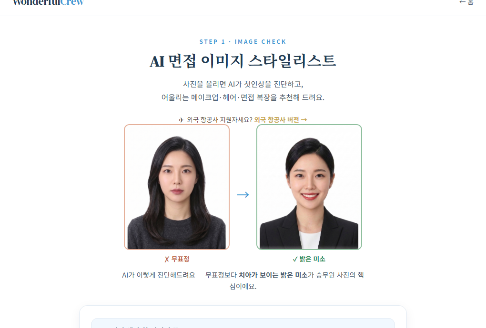
실제 서비스 화면 — 무표정 ❌ / 밝은 미소 ⭕
립스틱 수십 개, 이제 안 사도 돼요
면접 메이크업 컬러 찾겠다고 립스틱·아이섀도 수십 개 사보신 적 있죠. 대부분 몇 번 못 쓰고 서랍에 잠들어요. 우리 메이크업 입혀보기는 내 얼굴에 립·아이섀도 컬러를 직접 입혀보고 어울리는 색을 미리 찾아줘요. 사서 낭비할 일이 없어지는 거죠.
📷 여기에 '메이크업 입혀보기' 화면 캡처를 넣어주세요 (립스틱·아이섀도 컬러 팔레트가 보이는 그 화면)
이제, 준비의 방식이 달라졌어요
사진관 예약하고, 몇십만 원 쓰고, 시간 맞춰 찾아가던 시대는 지났어요. 집에서, 일상 사진 한 장으로, 지금 바로. 원더풀크루에서는 이 변화를 누구보다 먼저 만들고 있어요 — 승무원 면접 사진 준비를 정해진 시간표가 아니라 24시간 여러분 손안으로 옮겨놓는 일이요.
기회는 늘 갑자기 와요. 그때 사진 한 장 때문에 망설이지 않도록, 우리가 준비를 도와줄게요. 당신의 가장 좋은 얼굴, 우리가 꺼내 드릴게요.
✈️
원더풀크루 · 승무원 합격을 위한 AI 코칭 혼자 준비하기 막막하다면 편하게 물어보세요 — 카카오톡 zoco22
승무원 영문이력서(CV)는 준비생들이 가장 오래 붙잡고 가장 자신 없어 하는 서류예요. 이 글에서는 승무원 CV 양식을 템플릿으로 골라 몇 분 만에 완성하는 과정과, 가장 어려운 영어 문장을 AI가 대신 써주는 기능을 실제 화면으로 보여드릴게요.
밤 11시. 노트북 앞에 앉아 빈 문서를 열어요. 제목은 그럴듯하게 'CV_final'. 그런데 Work Experience 첫 줄에서 커서만 깜빡깜빡. 카페 아르바이트를 영어로 뭐라고 써야 하지? 이 경력이 승무원이랑 무슨 상관이 있다고 하지?
준비생들이 가장 오래 붙잡고, 가장 자신 없어 하는 게 바로 이 영문 CV예요. 답변 연습은 열심히 하면서, 정작 서류는 며칠씩 미루는 분들 정말 많아요. 어떻게 쓰는지 아무도 안 알려줬으니까요.
'CV_final'만 몇 개째인지 모르는 밤, 다들 있잖아요
승무원 CV에는 어떤 항목이 들어가나요?
객실승무원 이력서의 기본 구성은 다섯 가지예요 — 자기소개(About), 경력(Work Experience), 스킬(Skills), 자격(Certifications), 언어(Languages). 여기에 3:4 면접 사진이 들어갑니다. 원더풀크루 CV 메이커는 이 구성이 처음부터 잡혀 있어서, 항목을 고민할 필요 없이 내용만 채우면 돼요.
그래서, 골라서 채우면 완성되게 만들었어요
원더풀크루 승무원 CV 메이커는 이렇게 굴러가요. ① 템플릿 모양을 고르고 ② 컬러와 서체를 고르고 ③ 내용을 채우면 — 오른쪽 미리보기에 입력하는 그대로 실시간으로 완성돼요. A4 그대로, 인쇄·PDF와 똑같은 모습으로요.
실제 화면 — 모양 5가지 × 컬러 6가지 × 서체 2가지, 클릭만 하면 바뀌어요
클래식, 투톤, 헤더형, 미니멀, 타임라인. 어떤 걸 골라도 승무원 지원에 맞춘 구성이에요. 자기소개(About), 경력, 스킬, 자격, 언어 — 항공사 이력서에 들어가야 할 항목이 처음부터 자리 잡혀 있어서, 뭘 넣을지 고민하며 헤맬 필요가 없어요.
제일 막막한 문장은, AI가 대신 써드려요
사실 템플릿이 있어도 막히는 건 딱 한 군데예요. 문장. 경력을 영어로 어떻게 풀어야 할지 모르겠는 그 부분이요. 그래서 AI 자동완성을 넣었어요. 회사·직무·기간만 넣으면 — 자기소개, 경력 설명, 역량 문장을 AI가 채워드려요. 백지에서 시작하는 게 아니라, 이미 쓰인 문장을 내 이야기로 다듬기만 하면 되는 거예요.
실제 화면 — 왼쪽에 입력하면 오른쪽 A4에 바로 완성돼요
완성본은 이런 모습이에요
사진 넣고 PDF 버튼만 누르면, 이대로 제출하면 되는 서류가 나와요
면접 사진 자리도 있어요. 3:4 사진을 올리면 템플릿에 딱 맞게 들어가고요 — 지난 글에서 소개한 AI 면접사진으로 만든 사진을 그대로 쓰면, 사진부터 서류까지 한 번에 끝나요.
서류는 시작이에요
CV 메이커는 원더풀크루 월정액 멤버십에 포함돼 있어요. 서류, 사진, 매일의 면접 연습까지 — 승무원 준비의 전 과정을 한곳에서, 언제든 원하는 시간에. 준비의 품격이 달라지는 걸 느끼실 거예요.
몇 밤씩 커서만 깜빡이던 그 시간, 이제 연습에 쓰세요. 서류 때문에 시작을 미루는 일은 없게, 우리가 도와줄게요. 여러분의 경력은 생각보다 훨씬 근사하답니다.
✈️
원더풀크루 · 승무원 합격을 위한 AI 코칭 혼자 준비하기 막막하다면 편하게 물어보세요 — 카카오톡 zoco22
승무원 면접 연습, 어디서부터 시작해야 할지 막막하셨죠. 이 글에서는 사진·서류·표정·답변·실전 면접까지 승무원 면접 준비의 전 과정을 한 사이트에서 끝내는 방법을 실제 화면과 함께 보여드릴게요. 회원가입만 하면 무료체험 10회가 자동으로 주어집니다.
거울 앞에서 혼자 웃어보고, 답변을 외우고, 사진관을 알아보고, 영문 이력서 앞에서 밤을 새우고. 승무원 준비는 늘 이렇게 조각조각 흩어져 있었어요. 그래서 저희가 이걸 전부 한곳에 모았습니다.
승무원 면접 연습, 어떻게 시작해야 하나요?
답은 간단해요. 매일, 실전처럼, 피드백과 함께. 혼자 연습의 가장 큰 문제는 내가 잘하고 있는지 알 수 없다는 것인데, 지금은 AI가 표정·답변·서류를 즉시 봐주는 시대예요. 원더풀크루에서는 가입 즉시 무료체험 10회로 아래 기능들을 직접 써볼 수 있습니다.
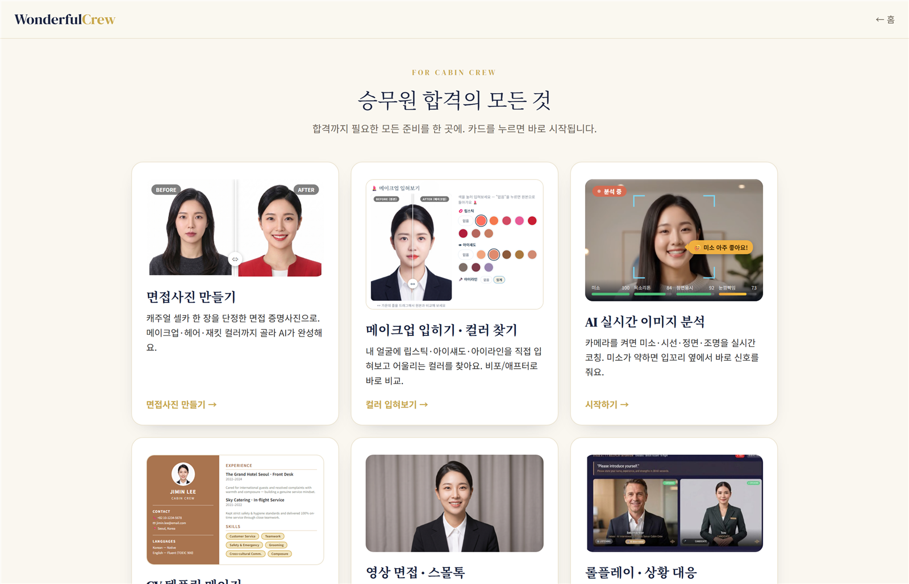
실제 화면 — 합격까지 필요한 준비가 카드 하나씩, 전부 한곳에
표정은 AI가 실시간으로 봐줘요
카메라만 켜면 미소·시선·정면·조명을 실시간 점수로 짚어줍니다. 무표정이 되는 순간 "입꼬리 조금만 더!" 신호가 뜨고, 활짝 웃으면 바로 칭찬이 떠요. 승무원 AI 면접 연습의 시작점으로 가장 좋아요.
실제 화면 — 웃는 순간 "미소 아주 좋아요!"
답변은 실전처럼 부딪혀 봐요
롤플레이 면접 연습에서는 면접관과 실제처럼 대화하고, 막히면 모범답변을 바로 받아볼 수 있어요. 그룹 디스커션 연습, 영상 면접, 영어 스몰톡까지 — 객실승무원 면접 준비에서 만나는 모든 형식을 시나리오별로 연습합니다.
서류는 템플릿과 AI가 함께
CV 메이커에서 템플릿·컬러를 고르고 내용을 채우면 영문 이력서가 실시간으로 완성되고, 가장 어려운 영어 문장은 AI가 대신 써줍니다. 이미 만들어둔 자소서·CV가 있다면 답변 첨삭에 붙여넣거나 PDF·사진 파일로 올리면 전문가 시선의 첨삭을 바로 받아요.
실제 화면 — 사진 넣고 PDF로 내려받으면 그대로 제출
요금은 이렇게 — 무료 10회부터
가입하면 무료체험 10회. 그다음은 딱 두 가지만 기억하세요.
베이직 (월 19.9만원) — 면접 연습·롤플레이·디스커션·CV 등 핵심 기능을 월 500회 한도로, 24시간 언제든. 엘리트 (월 29.9만원) — 베이직 전체 + 24시간 AI 면접 코치, 월 1,200회 한도. 항공사 면접관 패턴을 학습한 AI가 모의면접과 답변 분석까지 함께합니다.
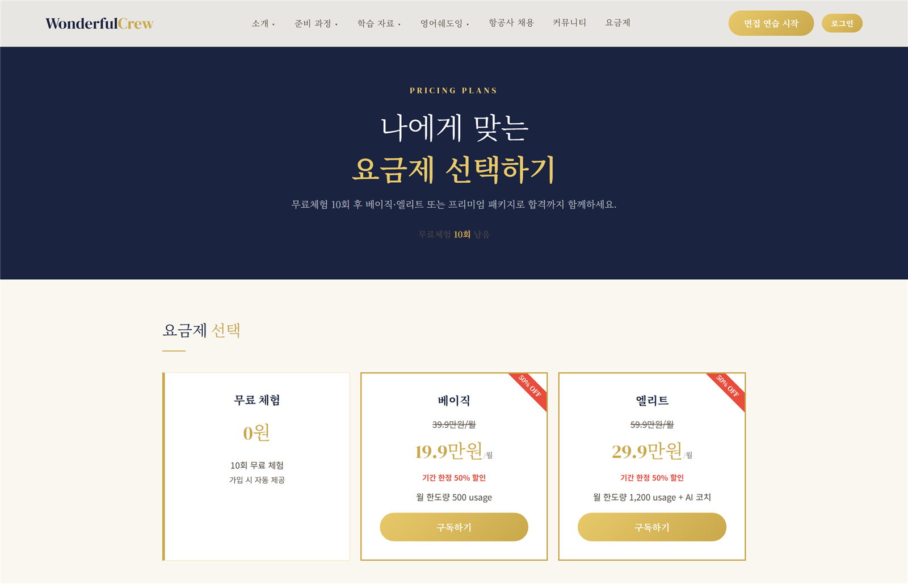
실제 화면 — 지금은 기간 한정 50% 할인 가격이에요
준비물은 노트북(또는 폰)과 시작하는 마음, 그게 전부예요. 오늘 무료체험 10회로 가볍게 시작해 보세요. 매일 쌓이는 연습이 결국 면접장의 그 미소를 만듭니다. 승무원이라는 꿈, 원더풀크루가 끝까지 함께할게요.
✈️
원더풀크루 · 승무원 합격을 위한 AI 코칭 — wonderfulcrew.com
혼자 준비하기 막막하다면 편하게 물어보세요 — 카카오톡 zoco22
승무원 면접 미소 연습, 거울 보고 하는 시대는 끝났어요. 이 글에서는 연습하는 내내 AI가 미소·시선·기울기·목소리를 실시간 점수로 보여주고, 표정이 풀리는 순간 입꼬리 옆에 바로 신호를 띄워주는 연습법을 실제 화면과 함께 보여드릴게요.
지망생들이 미소 연습을 어떻게 하는지 아세요. 카메라 켜 놓고 하루 10분씩 웃기. 거울 보고 웃기. 볼펜 물기. 다들 이렇게 해요. 정성은 진짜예요. 그런데 문제가 하나 있어요.
연습이 끝나고 나서야 내 얼굴을 본다는 거.
답변에 집중하는 순간 입꼬리는 내려가요. 백 퍼센트예요. 근데 그걸 10분 뒤 영상 돌려보면서 알아채면, 그 10분은 굳은 얼굴로 연습한 시간이 돼요. 표정은 무너지는 그 순간에 잡아야 고쳐집니다.
실시간 AI 얼굴 분석이란 무엇인가요?
실시간 AI 얼굴 분석이란, 면접 연습 중 카메라 속 내 미소·시선·얼굴 기울기·목소리를 AI가 매 순간 점수로 보여주는 기능이에요. 점수가 떨어지면 입꼬리 바로 옆에 "입꼬리 올려주세요!" 신호가 뜨고, 잘 웃고 있으면 "미소 아주 좋아요!"로 바뀝니다. 연습이 끝난 뒤가 아니라 연습하는 그 순간에 교정이 일어나요.
실제 화면 — 답변하는 내내 오른쪽에 점수가 살아 움직이고, 입꼬리 옆엔 코칭이 떠요
승무원 면접 미소 연습, 어떻게 하는 게 좋나요?
말하면서 웃는 연습이어야 해요. 가만히 웃는 건 누구나 하는데, 답변을 시작하면 표정이 풀리는 게 문제거든요. 그래서 질문에 답하는 동안 미소 점수가 유지되는지 확인하며 연습하는 것이 가장 효과적이고, 승무원 영상면접처럼 카메라 앞에서 말하는 형식이면 더 좋습니다.
원더풀크루 영상면접 연습에서는 항공사 기출 질문에 답하는 내내 분석이 돌아가요. 답변 내용은 음성으로 받아 적히고, 표정 점수는 옆에서 계속 움직이고. 말과 미소를 동시에 잡는 연습, 이게 실전이에요.
영상면접 시선처리는 어디를 봐야 하나요?
모니터가 아니라 카메라 렌즈를 봐야 해요. 화면 속 면접관 얼굴을 보면 내 시선은 아래로 내려가서, 면접관 화면에는 시선을 피하는 사람으로 보입니다. 그래서 시선 점수는 렌즈를 응시할 때 올라가게 되어 있어요 — 몸으로 익혀두면 실전에서 저절로 나옵니다.
실제 화면 — 영어 스몰톡 연습에도 똑같이 붙어 있어요. 첫인사 30초의 표정까지 봐줍니다
이렇게 연습해 보세요 — 3단계 루틴
1단계. 카메라 켜고 아무 말 없이 미소 점수만 30초 유지해 보기. 내 "기본 표정"의 점수를 알게 돼요. 2단계. 기출 질문에 답하면서, 말하는 중에 점수가 몇까지 떨어지는지 보기. 여기가 진짜 내 실력이에요. 3단계. "입꼬리 올려주세요!" 신호가 뜨는 횟수를 하루하루 줄여가기. 신호가 안 뜨는 날, 준비된 거예요.
실제 화면 — 표정이 풀리는 순간 미소 점수가 떨어지고, 입꼬리 신호가 바로 떠요
참고로 이 점수판과 말풍선은 화면에만 보이는 코칭이라, 녹화된 영상에는 남지 않아요. 연습 영상을 그대로 돌려보며 셀프 체크하는 용도로도 깔끔합니다.
표정은 재능이 아니라 근육이에요. 매일 몇 분씩, 무너지는 순간마다 바로잡아주는 코치와 연습하면 반드시 늘어요. 회원가입하면 무료체험 10회로 영상면접·스몰톡의 실시간 분석을 지금 바로 써볼 수 있어요. 오늘 카메라 앞에서 웃는 그 몇 분이, 면접장의 미소가 됩니다.
✈️
원더풀크루 · 승무원 합격을 위한 AI 코칭 — wonderfulcrew.com
혼자 준비하기 막막하다면 편하게 물어보세요 — 카카오톡 zoco22
카타르항공처럼 즉석에서 영어로 말하게 하는 면접에서 준비생이 무너지는 건 실력이 아니라 첫 3초의 정적이에요. 이 글에서는 승무원 영어 순발력을 키우는 워드슈팅·문장 슈팅 연습이 어떻게 굴러가는지, 왜 매일 짧게 하는 게 효과적인지 실제 기능과 함께 보여드릴게요.
워드슈팅이 뭔가요?
워드슈팅은 랜덤으로 주어지는 단어나 문장을 받아, 60초 안에 즉석에서 영어로 말하는 연습이에요. 원더풀크루에서는 Word 모드(단어 하나)와 Sentence 모드(문장 하나)로 나뉘고, 타이머가 도는 동안 멈추지 않고 말하는 훈련을 해요. 순발력을 보는 면접에 대비하는 즉흥 스피치 연습입니다.
왜 순발력 연습이 따로 필요한가요?
답변을 통째로 외운 준비생일수록 예상 밖 질문 하나에 크게 흔들려요. 면접관은 완벽한 문장이 아니라 당황한 순간에도 대화를 이어가는 태도를 봐요. 워드슈팅은 바로 그 근육을 길러줘요 — 키워드를 보자마자 입을 떼는 연습을, 매일 몇 번씩.
📷 여기에 '워드슈팅' 실제 화면 캡처를 넣어주세요 (랜덤 키워드와 60초 타이머가 보이는 그 화면)
완벽하지 않아도 괜찮아요
워드슈팅의 핵심은 정답이 아니에요. 문장이 조금 어색해도, 멈추지 않고 끝까지 말하는 게 훨씬 중요해요. 원더풀크루에서는 이 연습을 매일 반복하면서 '말이 막히는 공포' 자체를 줄여나가요. 실전에서 당황이 줄어드는 이유예요.
영어는 시험이 아니라 대화예요. 매일 조금씩 입을 떼다 보면, 어느 순간 키워드 앞에서 더 이상 얼지 않는 자신을 만나게 돼요. 그 변화, 우리가 옆에서 같이 만들어 드릴게요.
✈️
원더풀크루 · 승무원 합격을 위한 AI 코칭 — wonderfulcrew.com 혼자 준비하기 막막하다면 편하게 물어보세요 — 카카오톡 zoco22
승무원 그룹 디스커션은 혼자 잘한다고 통과하는 자리가 아니에요. 이 글에서는 항공사별로 다른 디스커션 형식과, 원더풀크루에서 그걸 항공사별 시나리오로 나눠 연습하는 방법을 정리해 드릴게요. 발언 순서·논리 전개·매너까지, 그룹 토론에서 실제로 평가받는 것들이요.
그룹 디스커션에서는 뭘 평가하나요?
면접관이 보는 건 '가장 말 많이 한 사람'이 아니에요. 다른 사람의 말을 듣고, 흐름을 정리하고, 자기 의견을 매너 있게 얹는 태도예요. 튀려고 상대를 자르는 사람은 오히려 감점이에요. 승무원은 팀으로 일하니까요.
항공사별로 형식이 어떻게 다른가요?
원더풀크루에서는 항공사별 디스커션을 이렇게 나눠 연습해요. Emirates는 1차에서 주어진 주제를 정리해 발표하고, 2차에서 실전 상황의 우선순위를 토론해요. Singapore Airlines는 찬반이 정해지면 AI가 반대 입장에서 맞받아치는 디베이트를 하고요. Qatar는 랜덤 키워드로 즉석 1분 영어 발표를 해요. Etihad·Cathay 같은 항공사는 신규 노선·팀 갈등 같은 기출을 종합 토론합니다.
항공사별·주제별 시나리오로 그룹 토론을 연습해요
혼자서 그룹 토론을 어떻게 연습하나요?
가장 막막한 지점이 이거예요 — 상대가 없는데 어떻게 토론을 연습하지? 원더풀크루에서는 AI가 상대 역할을 맡아 반론을 던지고, 배경별 시나리오를 무제한으로 바꿔가며 연습할 수 있어요. 실제 오픈데이의 긴장된 공기를, 집에서 미리 겪어보는 거예요.
그룹 안에서 빛나는 사람은 목소리 큰 사람이 아니라, 팀을 좋게 만드는 사람이에요. 그 감각은 연습으로 길러져요. 낯선 그룹 앞에서 당황하지 않도록, 우리가 미리 같이 부딪혀 볼게요.
✈️
원더풀크루 · 승무원 합격을 위한 AI 코칭 — wonderfulcrew.com 혼자 준비하기 막막하다면 편하게 물어보세요 — 카카오톡 zoco22
승무원 준비, 사진관·스터디·학원을 따로 돌지 않아도 됩니다. 원더풀크루에서는 면접 사진부터 영어 테스트, 실전 면접까지 합격에 필요한 과정을 한 곳에서 연습해요. 이 글에서는 실제 서비스 화면을 그대로 보여드리며, 각 기능이 어떻게 작동하는지 하나씩 정리해 드릴게요.
① 면접 사진 — 일상 셀카 한 장이면 충분해요
지원서에 가장 먼저 들어가는 게 사진이에요. 원더풀크루에서는 평소 찍은 캐주얼 셀카 한 장을 올리면 AI가 단정한 헤어, 자연스러운 면접 메이크업, 항공사 면접용 재킷 컬러와 깔끔한 배경까지 입혀 합격용 증명사진으로 완성해요. 헤어·메이크업·촬영에 수십만 원 들이지 않아도 됩니다.
BEFORE · 일상 셀카AFTER · 합격 증명사진
② 메이크업 컬러 찾기 — 내 얼굴에 직접 발라봐요
립스틱·아이섀도 컬러를 수십 개 사서 버릴 필요 없어요. 원더풀크루에서는 내 얼굴에 립스틱·아이섀도·아이라인을 직접 입혀보며 나에게 어울리는 면접 메이크업 컬러를 찾아요. 색을 클릭하면 실시간으로 발라지고, 가운데 선을 좌우로 밀면 화장 전과 후가 한눈에 비교됩니다.
가장 미루기 쉬운 게 영문 이력서예요. 원더풀크루에서는 템플릿과 포인트 컬러를 고르고 WORK EXPERIENCE·EDUCATION·SKILLS를 채우면 오른쪽 미리보기에 실시간으로 완성되고, 영어가 막히면 AI가 문장을 다듬어줘요. 완성본은 PDF로 바로 내려받아 제출합니다.
실제 화면 — 왼쪽에 입력하면 오른쪽 A4에 이대로 완성돼요
⑤ 영상 면접 · 스몰톡 — 실제 비디오 면접처럼
원더풀크루에서는 실제 비디오 면접처럼 카메라를 켜고 답변을 녹화하며 연습해요. AI 면접관과 첫 30초 스몰톡을 음성으로 주고받고, 답하는 동안 얼굴을 자동 인식해 화면 오른쪽에 미소·시선·목소리·기울기 점수가 실시간 그래프로 떠요.
실제 화면 — 답변하는 내내 표정과 목소리가 점수로 보여요실제 화면 — 면접관과 마주 보며 답하는 내내 표정·목소리가 점수로 떠요
⑥ 롤플레이 · 상황 대응 — 돌발 상황을 미리 겪어요
기내 승객 응대와 돌발 상황을 AI 면접관과 실시간으로 연습해요. 원더풀크루에서는 기내·호텔·레스토랑·크루즈 등 응대 상황을 고르고, 영국·미국 등 엑센트를 선택해 실제 외항사 면접 환경처럼 연습합니다.
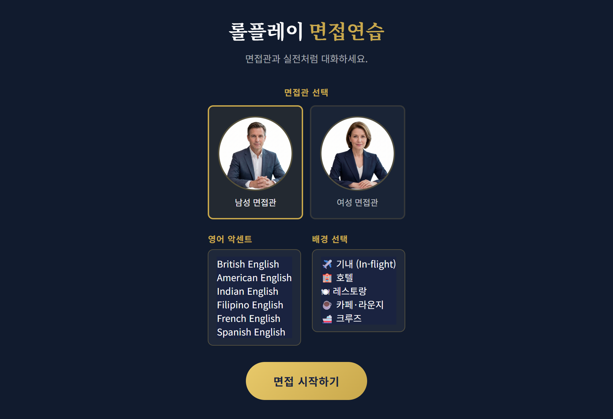
실제 화면 — 면접관·영어 엑센트·응대 배경을 골라 시작해요
⑦ 그룹 디스커션 — 항공사마다 규칙이 달라요
실전 그룹 토론을 항공사별·라운드별 시나리오로 연습해요. 원더풀크루에서는 Emirates 1차(발표)·2차(우선순위 토론)부터 Singapore식 디베이트까지, 실제 기출 형식을 그대로 준비합니다.
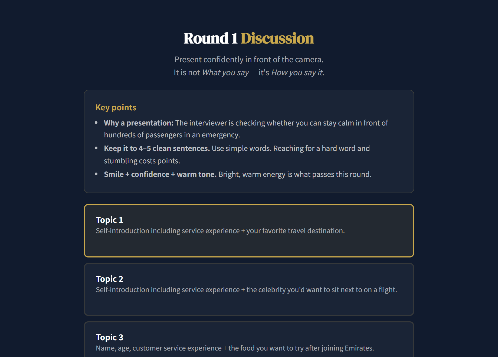
실제 화면 — 1차 디스커션: 발표 주제와 핵심 포인트
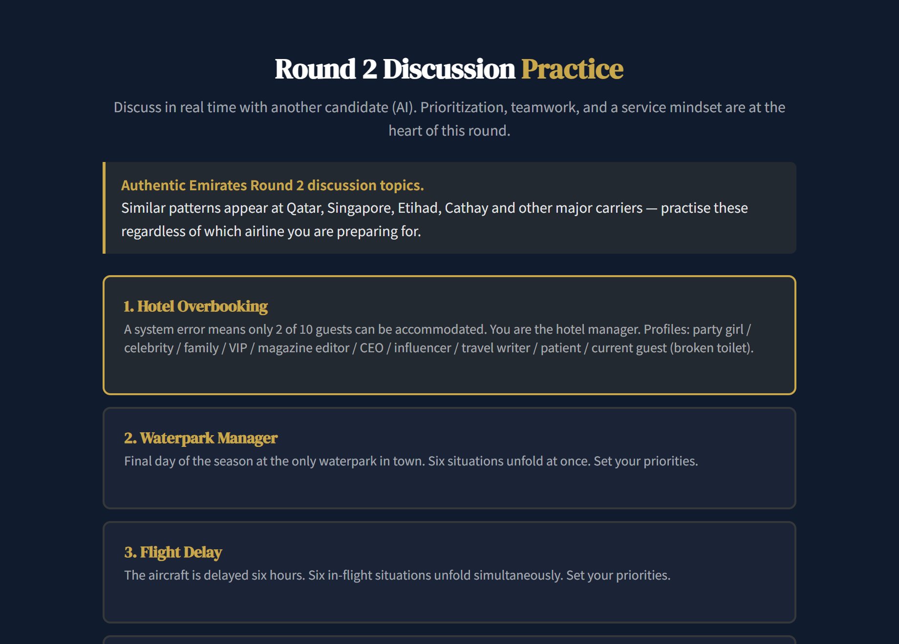
실제 화면 — 2차 디스커션: 실전 우선순위 토론 시나리오
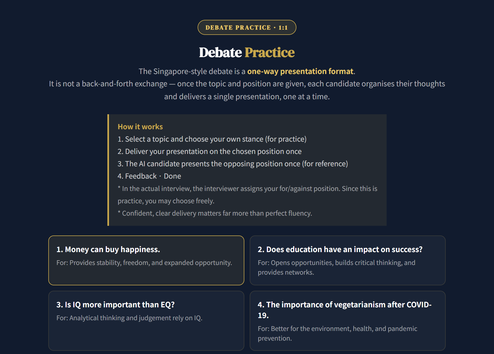
실제 화면 — 싱가포르식 1:1 디베이트: 주제·입장 선택실제 화면 — 두 지망생이 실시간으로 토론하고, 발언이 자막으로 기록돼요
⑧ 워드슈팅 — 멈추지 않는 순발력
랜덤으로 주어지는 단어나 문장을 받아 60초 안에 즉석에서 영어로 발표해요. 원더풀크루에서는 Qatar처럼 순발력을 보는 면접에 대비하는 즉흥 스피치를, 타이머가 도는 동안 멈추지 않고 말하는 훈련으로 키웁니다.
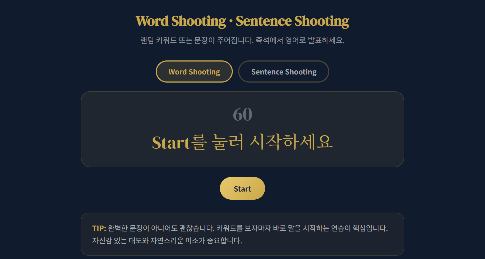
실제 화면 — 시작 전: Word/Sentence 모드와 60초 타이머
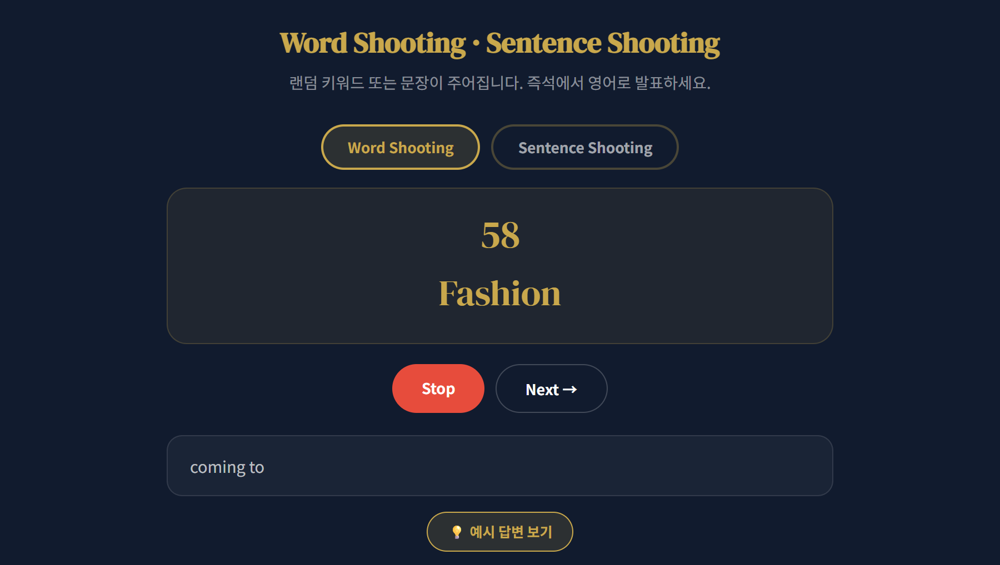
실제 화면 — 키워드가 뜨면 60초 안에 바로 말해요
⑨ 영어 테스트 — 내 수준을 숫자로
어휘·전치사·독해를 객관식으로 풀며 항공사 실전 영어 패턴을 점검해요. 원더풀크루에서는 어휘 30문항과 독해 지문으로 내 영어 수준을 숫자로 확인하고 약한 부분을 보완합니다.
실제 화면 — 항공사 실전 어휘·전치사 빈칸 채우기
⑩ 파이널 · 종합 분석 — 마지막 1:1까지
실전 직전 최종 점검과 종합 실력 분석 리포트, 그리고 1:1 코치 피드백까지. 원더풀크루에서는 그동안의 연습 데이터를 모아 미소·답변·태도를 항목별로 확인하고, 마지막은 코치 피드백으로 실전 준비를 완성합니다.
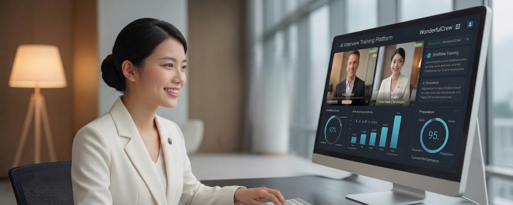
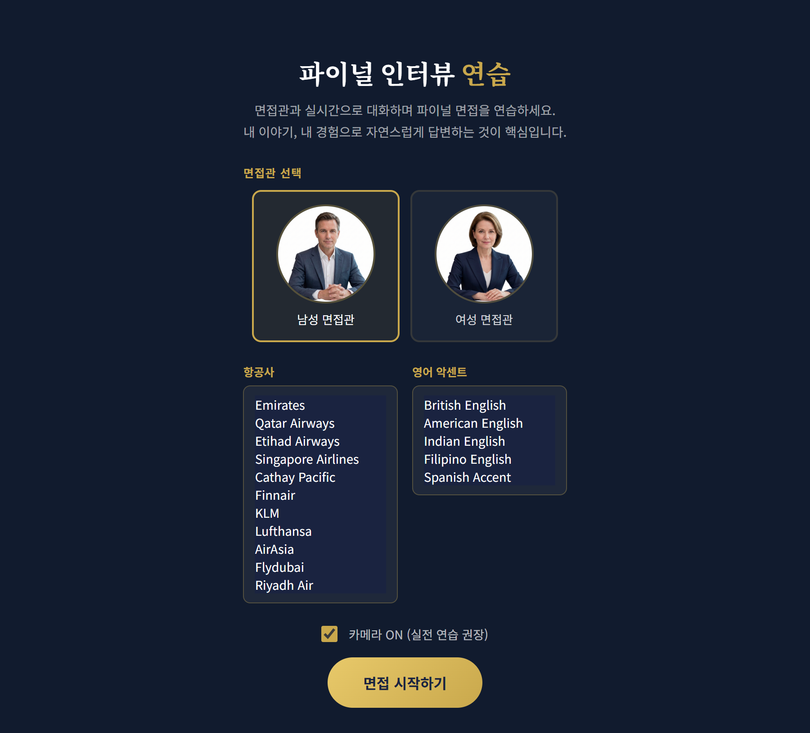
실제 화면 — 항공사·면접관·엑센트를 골라 실전처럼 마무리해요실제 화면 — 실전처럼 질문을 받고, 답변이 자막으로 실시간 기록돼요
⑪ 성장 리포트 — 매일의 연습이 그래프로 쌓여요
원더풀크루에서는 매 연습의 점수가 자동으로 기록돼 종합 실력이 분석돼요. 유창성·자신감·발음·서비스 마인드까지 5개 역량을 레이더 차트와 항목별 점수·등급으로 확인하고, 강점과 보완할 부분을 리포트로 받습니다. 무엇을 더 연습해야 할지 코칭 인사이트가 방향을 잡아줘요.
실제 화면 — 종합 점수·등급, 5개 역량 레이더, 강점·보완 리포트
승무원 준비, 이렇게 검색해서 오셨나요?
승무원 준비 방법, 외항사 승무원 되는 법, 승무원 면접 준비, 승무원 면접 사진, 승무원 영문 CV(이력서), 승무원 영어 면접, 그룹 디스커션·롤플레이 연습 — 흩어진 정보를 찾아다니지 않아도 됩니다. 에미레이트·카타르항공·싱가포르항공·캐세이퍼시픽 등 외항사부터 국내 항공사 승무원 면접까지, 원더풀크루 한 곳에서 면접사진·메이크업·실시간 이미지 분석·영상 면접·파이널 종합 분석까지 매일 연습하며 준비할 수 있어요.
사진 한 장부터 마지막 1:1 면접까지 — 흩어져 있던 준비를 한 곳에서, 매일 조금씩. 원더풀크루에서는 그 전 과정을 실제 화면으로 직접 연습하며 합격까지 함께 걸어드릴게요.
✈️
원더풀크루 · 승무원 합격을 위한 AI 코칭 — wonderfulcrew.com 혼자 준비하기 막막하다면 편하게 물어보세요 — 카카오톡 zoco22
승무원 준비, 어디서부터 어떻게 시작해야 할지 막막하셨죠? 정해진 시간·장소에 맞춰 학원이나 스터디를 다녀야 했던 준비는 이제 그만. 어디에 있든, 언제든 면접 사진부터 영문 CV, 실전 영상 면접과 그룹 디스커션, 파이널 종합 분석까지 AI와 하나씩 완성할 수 있어요. 오는 9월 20일(일) 오후 7시, 원더풀크루에서는 이 전 과정을 실제 화면으로 보여드리는 무료 온라인 라이브 클래스를 엽니다. 아래는 이번 라이브에서 함께 볼 실제 기능들이에요.
① 면접 사진 — 일상 셀카 한 장이면 충분해요
승무원 지원서에 가장 먼저 들어가는 것이 바로 면접 사진이에요. 사진관에서 헤어·메이크업·면접 복장까지 갖추면 수십만 원이 드는데, 원더풀크루에서는 평소 찍은 캐주얼 셀카 한 장이면 충분합니다. AI가 단정한 헤어, 자연스러운 면접 메이크업, 항공사 면접용 재킷 컬러와 깔끔한 배경까지 입혀 합격용 증명사진으로 완성해요.
BEFORE(일상 셀카) → AFTER(합격 증명사진)
이 기능에서는1. 평소 찍은 셀카를 올리면 AI가 단정한 헤어·자연스러운 면접 메이크업·항공사 재킷을 자동으로 입혀줍니다. 2. 재킷 컬러(네이비·블랙 등)와 배경(흰색·블루)을 골라 여러 버전을 나란히 비교할 수 있어요. 3. 마음에 드는 사진을 바로 다운로드 — 사진관 예약도, 수십만 원의 촬영비도 필요 없습니다.
② 메이크업 컬러 찾기 — 내 얼굴에 직접 발라봐요
어울리는 컬러를 찾겠다고 립스틱·아이섀도를 수십 개 사서 서랍에 잠들게 둔 적 있으시죠? 원더풀크루에서는 내 얼굴에 립스틱·아이섀도·아이라인을 직접 입혀보며 나에게 어울리는 면접 메이크업 컬러를 미리 찾아요. 색을 클릭하면 실시간으로 발라지고, 가운데 선을 좌우로 밀면 화장 전과 후가 한눈에 비교됩니다.
이 기능에서는1. 립스틱·아이섀도·아이라인 색을 클릭하면 내 얼굴에 실시간으로 발라지고, 진하기도 슬라이더로 조절합니다. 2. 사진 가운데 선을 좌우로 밀면 화장 전(원본)과 화장 후를 곧바로 비교할 수 있어요. 3. 배경색까지 흰색·블루로 바꿔 실제 면접 사진 느낌을 미리 확인합니다.
③ AI 실시간 이미지 분석 — 무표정인 걸 본인만 몰라요
실전 면접에서 무너지는 건 대개 표정이에요. 원더풀크루에서는 카메라를 켜면 미소·정면 응시·시선·목소리·자세(수평·어깨)·조명까지 일곱 가지를 각각 점수로 매기고 종합 점수까지 실시간으로 코칭합니다. 무표정일 땐 미소 점수가 34점까지 떨어지며 "미소를 더 활짝!" 신호가, 밝게 웃으면 90점 이상으로 올라가요. 답변하는 내내 흐트러지는 순간을 놓치지 않습니다.
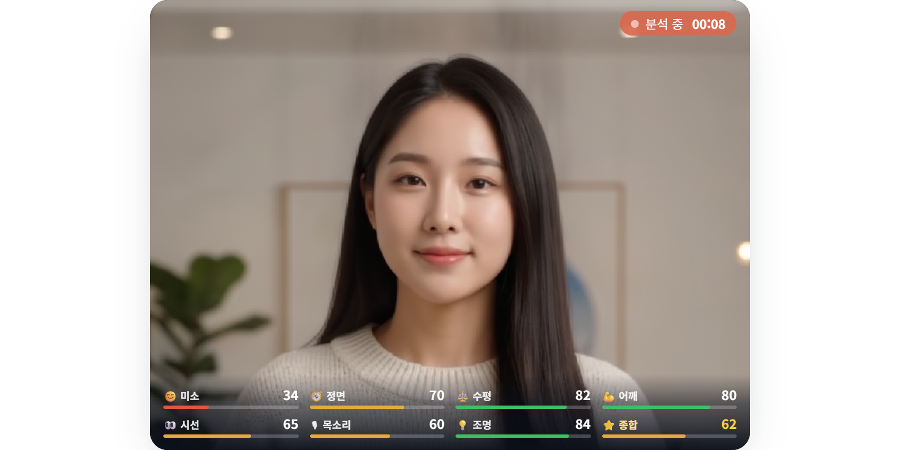
실제 화면 — 무표정이면 미소 34점, 밝게 웃으면 90점대로. 일곱 가지 지표를 한 화면에서 봐요.
이 기능에서는1. 카메라를 켜면 미소·정면 응시·시선·목소리·자세·조명 일곱 가지를 각각 점수로 매기고 종합 점수까지 실시간으로 보여줍니다. 2. 무표정일 땐 미소 점수가 34점까지 떨어지며 코칭 신호가, 밝게 웃으면 90점대로 올라가요. 3. 이 점수판과 신호는 화면 위에만 떠서 녹화 영상·저장본에는 전혀 남지 않습니다.
④ 영문 CV 템플릿 메이커 — 몇 분이면 완성돼요
승무원 지원에서 가장 미루기 쉬운 게 영문 이력서(CV)예요. 원더풀크루에서는 템플릿 모양(클래식·투톤·헤더형·미니멀·타임라인)과 포인트 컬러, 서체를 고르고 WORK EXPERIENCE·EDUCATION·SKILLS를 채우면 오른쪽 미리보기에 실시간으로 완성됩니다. 영어가 막히면 AI가 문장을 다듬어주고, 완성본은 PDF로 바로 내려받아 제출할 수 있어요.
실제 화면 — 왼쪽에 이름·경력·학력을 입력하면 오른쪽 이력서에 실시간으로 완성돼요
이 기능에서는1. 클래식·투톤 등 템플릿과 포인트 컬러·서체를 고릅니다. 2. WORK EXPERIENCE · EDUCATION · SKILLS를 채우면 오른쪽 미리보기에 실시간 반영되고, 영어가 막히면 AI가 문장을 다듬어줘요. 3. 완성된 이력서를 PDF로 내려받아 그대로 제출할 수 있어요.
⑤ 영상 면접 · 스몰톡 — 실제 비디오 면접처럼
원더풀크루에서는 실제 비디오 면접처럼 카메라를 켜고 답변을 녹화하며 연습해요. AI 면접관과 첫 30초 스몰톡을 음성으로 주고받고, 답하는 동안 얼굴을 자동 인식해 화면 오른쪽에 미소·시선·목소리·기울기 점수가 실시간 그래프로 떠요. 카메라를 보며 웃는 게 자연스러워지면 첫인상이 확 달라집니다.
이 기능에서는1. AI 면접관과 첫 30초 스몰톡을 실전처럼 음성으로 주고받습니다. 2. 답하는 동안 얼굴을 자동 인식해 미소·시선·목소리·기울기 점수가 실시간 그래프로 떠요. 3. 답변은 텍스트로도 기록돼 어떤 표현을 썼는지 다시 확인할 수 있어요.
⑥ 롤플레이 · 상황 대응 — 돌발 상황을 미리 겪어요
기내 승객 응대와 돌발 상황을 AI 면접관과 실시간으로 연습해요. 원더풀크루에서는 기내·호텔·레스토랑·카페·크루즈 등 응대 상황을 고르고, 영국·미국 등 엑센트를 선택해 실제 외항사 면접 환경처럼 연습합니다. 까다로운 승객 상황을 반복하면 실제 면접의 돌발 질문에도 당황하지 않아요.
이 기능에서는1. 기내·호텔·레스토랑·카페·크루즈 등 응대 상황을 고릅니다. 2. AI 면접관이 까다로운 승객이나 돌발 상황을 제시하면 영어로 실시간 응대해요. 3. 영국·미국 등 엑센트를 선택해 실제 외항사 면접 환경처럼 연습합니다.
⑦ 그룹 디스커션 — 항공사마다 규칙이 달라요
실전 그룹 토론을 항공사별·라운드별 시나리오로 연습해요. 원더풀크루에서는 Emirates 1차(발표)·2차(우선순위 토론)부터 Singapore식 디베이트, Qatar식 즉석 발표까지 실제 기출 형식을 그대로 준비합니다. 발언 순서·논리 전개·매너까지, 그룹 면접에서 평가받는 핵심을 짚어드려요.
항공사별 디스커션1. Emirates — 1차는 주어진 주제를 정리해 발표, 2차는 실전 기출 상황에서 우선순위를 토론합니다. 2. Singapore Airlines — 찬반이 정해지면 AI가 반대 입장에서 맞받아치는 디베이트. 3. Qatar — 랜덤 키워드를 받고 즉석에서 1분 영어 발표(워드슈팅). 4. 기타 항공사(Etihad·Cathay 등) — 신규 노선·친환경·위기 PR 등 다양한 기출을 종합 토론.
⑧ 워드슈팅 — 멈추지 않는 순발력
랜덤으로 주어지는 단어나 문장을 받아 60초 안에 즉석에서 영어로 발표해요. 원더풀크루에서는 Qatar처럼 순발력을 보는 면접에 대비하는 즉흥 스피치를, 타이머가 도는 동안 멈추지 않고 말하는 훈련으로 키웁니다.
이 기능에서는1. Word 모드는 단어 하나, Sentence 모드는 문장 하나가 랜덤으로 주어집니다. 2. 60초 타이머가 도는 동안 멈추지 않고 즉석에서 영어로 말해요. 3. 실전에서 당황하지 않도록 순발력과 발화량을 함께 키웁니다.
⑨ 영어 테스트 — 내 수준을 숫자로
어휘·전치사·독해를 객관식으로 풀며 항공사 실전 영어 패턴을 점검해요. 원더풀크루에서는 어휘 30문항과 독해 지문으로 내 영어 수준을 숫자로 확인하고 약한 부분을 보완합니다.
영어 테스트 English Test
① 어휘 테스트30문항 빈칸 채우기
② 독해 테스트지문 1개 8문항
이 기능에서는1. 어휘 테스트 — 30문항, 항공사 실전 어휘와 전치사를 빈칸 채우기로 점검합니다. 2. 독해 테스트 — 지문 1개에 8문항, 실제 면접 영어 수준으로 독해력을 연습해요.
⑩ 파이널 · 종합 분석 — 마지막 1:1까지
실전 직전 최종 점검과 종합 실력 분석 리포트, 그리고 1:1 코치 피드백까지. 원더풀크루에서는 그동안의 연습 데이터를 모아 미소·답변·태도를 항목별로 확인하고, 마지막은 코치 피드백으로 실전 준비를 완성합니다.
이 기능에서는1. 실전 직전 종합 점검과 그동안의 연습 데이터를 모은 실력 분석 리포트를 받습니다. 2. 미소·답변·태도 등 항목별로 부족한 부분을 데이터로 확인해요. 3. 마지막은 1:1 코치 피드백으로 실전 준비를 완성합니다.
⑪ 성장 리포트 — 매일의 연습이 그래프로 쌓여요
원더풀크루에서는 매 연습의 점수가 자동으로 기록돼 종합 실력이 분석돼요. 유창성·자신감·발음·서비스 마인드까지 5개 역량을 레이더 차트와 항목별 점수·등급으로 확인하고, 강점과 보완할 부분을 리포트로 받습니다. 무엇을 더 연습해야 할지 코칭 인사이트가 방향을 잡아줘요.
이 기능에서는1. 종합 점수·등급과 5개 역량 레이더 차트로 내 실력을 한눈에 봅니다. 2. 항목별 점수·상태(우수·양호·보통)와 강점·보완 영역을 리포트로 받아요. 3. 무엇을 더 연습해야 할지 코칭 인사이트로 방향을 잡습니다.
합격생 이야기
★★★★★
“매일 실시간 AI 면접으로 연습하니 실전에서 하나도 안 떨렸어요. 영어 답변이 자연스러워진 게 스스로 느껴질 정도였습니다.”
이○○ · 카타르항공 합격
★★★★★
“면접사진부터 영문 CV까지 한 곳에서 준비했어요. 특히 이미지 분석으로 무표정 습관을 잡고 미소를 교정한 게 결정적이었습니다.”
박○○ · 에미레이트항공 합격
★★★★★
“롤플레이로 까다로운 승객 상황을 계속 연습하니 실제 면접의 돌발 질문에도 당황하지 않았어요. 준비된 사람이 된 느낌이었습니다.”
김○○ · 싱가포르항공 합격
★★★★★
“스몰톡 연습에서 오른쪽에 시선 점수가 실시간으로 떠서, 제가 자꾸 아래를 본다는 걸 알았어요. 그거 고치고 인상이 확 달라졌습니다.”
정○○ · 대한항공 합격
★★★★★
“메이크업 컬러 찾기로 저한테 맞는 립 색을 미리 골라봤어요. 화장이 붕 뜨지 않으니 사진도, 실물도 훨씬 단정해 보였습니다.”
최○○ · 진에어 합격
★★★★★
“워드슈팅으로 순발력을 키우고 디스커션에서 발언 순서를 배웠어요. 그룹 면접에서 제 차례가 왔을 때 자신 있게 말할 수 있었습니다.”
한○○ · 카타르항공 합격
★★★★★
“영상 면접 스몰톡을 반복하니 첫 30초의 긴장이 풀렸어요. 카메라를 보며 웃는 게 자연스러워진 뒤로 인상이 확 달라졌습니다.”
윤○○ · 에티하드항공 합격
★★★★★
“파이널 종합 리포트로 제 약점이 데이터로 보였어요. 실전 직전에 무엇을 보완해야 할지가 분명해져서 마음이 놓였습니다.”
서○○ · 캐세이퍼시픽 합격
★★★★★
“영문 CV를 템플릿으로 하루 만에 완성했어요. 문장이 막힐 때마다 AI가 다듬어줘서 자신 있게 제출할 수 있었습니다.”
임○○ · 대한항공 합격
승무원 준비, 이렇게 검색해서 오셨나요?
승무원 준비 방법, 외항사 승무원 되는 법, 승무원 면접 준비, 승무원 면접 사진, 승무원 영문 CV(이력서), 승무원 영어 면접, 그룹 디스커션·롤플레이 연습, 워드슈팅, 파이널 종합 분석 — 흩어진 정보를 찾아다니지 않아도 됩니다. 에미레이트·카타르항공·싱가포르항공·캐세이퍼시픽·에티하드 등 외항사부터 대한항공·아시아나 등 국내 항공사 승무원 면접까지, 원더풀크루 한 곳에서 면접사진·메이크업·실시간 이미지 분석·영상 면접·CV·롤플레이·그룹 디스커션·파이널까지 매일 연습하며 준비할 수 있어요.
사진 한 장부터 마지막 1:1 면접까지, 흩어져 있던 준비를 한 곳에서 매일 조금씩. 이 모든 과정을 9월 20일(일) 오후 7시 무료 온라인 라이브에서 직접 보여드릴게요. 아래 버튼으로 지금 신청하시면 참여 방법을 안내해 드립니다.
승무원 면접 사진, 어떻게 준비하지? 하고 검색해 보면 다들 비슷한 고민 앞에서 멈칫하게 돼요. "증명사진은 어디서 찍지", "비용은 얼마나 들까", "헤어랑 메이크업까지 다 받아야 하나"… 승무원 지원의 첫인상은 지원서에 붙이는 사진 한 장에서 시작되거든요. 항공사는 서류 단계에서부터 단정함과 프로페셔널한 이미지를 봐요. 그래서 면접 사진, 가볍게 넘길 수가 없죠. 그런데 제대로 된 증명사진 한 장을 마련하려면 헤어·메이크업·정장에 스튜디오 예약까지, 수십만 원과 반나절이 훌쩍 들어가는 게 현실이에요. 촬영 당일 컨디션이나 조명에 따라 결과가 달라지고, 재킷 색이나 배경을 바꿔 다시 찍고 싶어도 추가 비용이 부담돼 한 가지 버전으로 만족하게 되고요. 이 벽 앞에서 지원 자체를 미루는 분들도 적지 않아요.
원더풀크루에서는 이 모든 과정을 셀카 한 장으로 대신할 수 있도록 설계했습니다. 특별히 준비할 것도, 미리 꾸밀 것도 없습니다. 평소 편하게 찍어둔 캐주얼한 사진 한 장을 올리기만 하면, AI가 지원자의 이목구비와 얼굴형을 인식해 승무원 면접에 어울리는 이미지로 다듬어 줍니다. 단정하게 정돈된 헤어, 과하지 않고 자연스러운 면접 메이크업, 그리고 항공사 면접에 적합한 재킷까지 한 번에 입혀 서류에 바로 첨부할 수 있는 합격용 증명사진으로 완성합니다. 스튜디오를 오가는 이동 시간도, 사전 예약의 부담도 없이 원하는 순간에 만들 수 있다는 점이 지원자에게 큰 여유를 안겨 줍니다.
준비도, 예약도 필요 없어요 — 집에서 찍은 평소 셀카 한 장이면 시작됩니다.
재킷 컬러와 배경을 골라 여러 버전을 비교해요
면접 사진은 지원하는 항공사에 따라 어울리는 색과 배경이 조금씩 달라요. 네이비·블랙 재킷, 흰색·블루 배경을 직접 골라서 여러 버전을 나란히 만들어 볼 수 있어요. 한 장 뽑고 끝이 아니라, 눈앞에 두고 비교하면서 나한테 제일 잘 어울리는 인상을 차분히 골라보세요. 외항사용·국내 항공사용을 각각 다른 톤으로 준비하고 싶으신 분들도 유용할 거예요.
재킷 컬러와 배경을 바꿔 여러 버전을 만들고, 나란히 놓고 비교해 봐요.
마음에 드는 사진을 바로 다운로드하세요
제일 마음에 드는 버전 하나 골라서 그 자리에서 바로 내려받으면 끝이에요. 사진관 다시 찾아가서 파일 받는 기다림도, 수정 요청에 붙는 추가 비용도 없어요. 지원 마감이 코앞이어도 짧은 시간 안에 단정한 면접 사진을 준비할 수 있으니, 촬영 일정에 쫓기지 않고 자기소개서 쓰는 데 온전히 집중하실 수 있을 거예요.
완성된 사진, 마음에 들면 바로 저장 — 그게 다예요.
이 기능에서는1. 평소 찍은 셀카를 올리면 AI가 단정한 헤어·자연스러운 면접 메이크업·항공사 재킷을 자동으로 입혀줘요. 2. 재킷 컬러(네이비·블랙 등)와 배경(흰색·블루)을 골라 여러 버전을 나란히 비교할 수 있어요. 3. 마음에 드는 사진을 바로 다운로드 — 사진관 예약도, 수십만 원의 촬영비도 필요 없어요.
이런 분께 특히 좋아요
승무원 면접 사진을 어떻게 준비해야 할지 막막하신 분, 증명사진 촬영 비용이 부담스러운 분, 외항사와 국내 항공사를 동시에 준비하며 여러 버전이 필요하신 분께 특히 잘 맞아요. 지원 마감이 촉박해서 사진관 예약이 어려우신 분, 찍어둔 증명사진이 마음에 안 들어 다시 만들고 싶으신 분께도요. 원더풀크루의 면접 사진 만들기와 함께라면, 첫 관문의 인상을 한결 여유롭게 준비하실 수 있어요.
승무원 면접 메이크업 컬러, 사기 전에 내 얼굴에 먼저 입혀보세요 립스틱·아이섀도·아이라인을 실시간으로 발라보고 나에게 어울리는 색을 찾는 법
WonderfulCrew · 승무원 합격 코칭
승무원 면접 메이크업을 검색하다 보면 누구나 같은 벽에 부딪힙니다. "면접 립스틱 색은 뭐가 좋을까", "승무원 면접 화장은 어느 정도가 적당할까", "내 피부톤에 맞는 아이섀도는 어떤 색일까." 정답을 찾겠다며 립스틱과 아이섀도를 수십 개 사 두었지만, 결국 몇 개만 손이 가고 나머지는 서랍 속에서 잠들어 버린 경험, 한 번쯤 있으실 겁니다. 매장 조명 아래에서는 완벽해 보였는데 정작 내 얼굴, 내 조명에서는 어딘가 어색했던 순간도요. 원더풀크루에서는 색을 사기 전에, 내 얼굴 사진 위에 직접 입혀보며 나에게 어울리는 승무원 면접 메이크업 컬러를 먼저 찾을 수 있도록 준비했습니다.
립스틱·아이섀도를 계속 사 모으지만, 정작 손이 가는 건 몇 개뿐 — 시간도 비용도 서랍 속에 잠듭니다.
왜 면접 메이크업 컬러 찾기가 이렇게 어려울까요
퍼스널컬러 진단을 받아도 매장에서는 늘 헷갈립니다. 웜톤인지 쿨톤인지, 코랄 립이 맞는지 로즈 립이 맞는지, 손등에 발라보는 스와치만으로는 정작 내 얼굴 위에서 어떻게 보일지 알 수 없기 때문입니다. 팔뚝 가득 색을 발라 비교해봐도 조명이 바뀌면 인상이 또 달라집니다. 면접을 앞두면 이 고민이 더 커집니다. 승무원 메이크업은 화려함이 아니라 단정하고 신뢰감 있는 인상이 핵심인데, 어떤 컬러가 내 피부톤과 이목구비에 자연스럽게 녹아드는지 미리 확인할 방법이 마땅치 않으니까요.
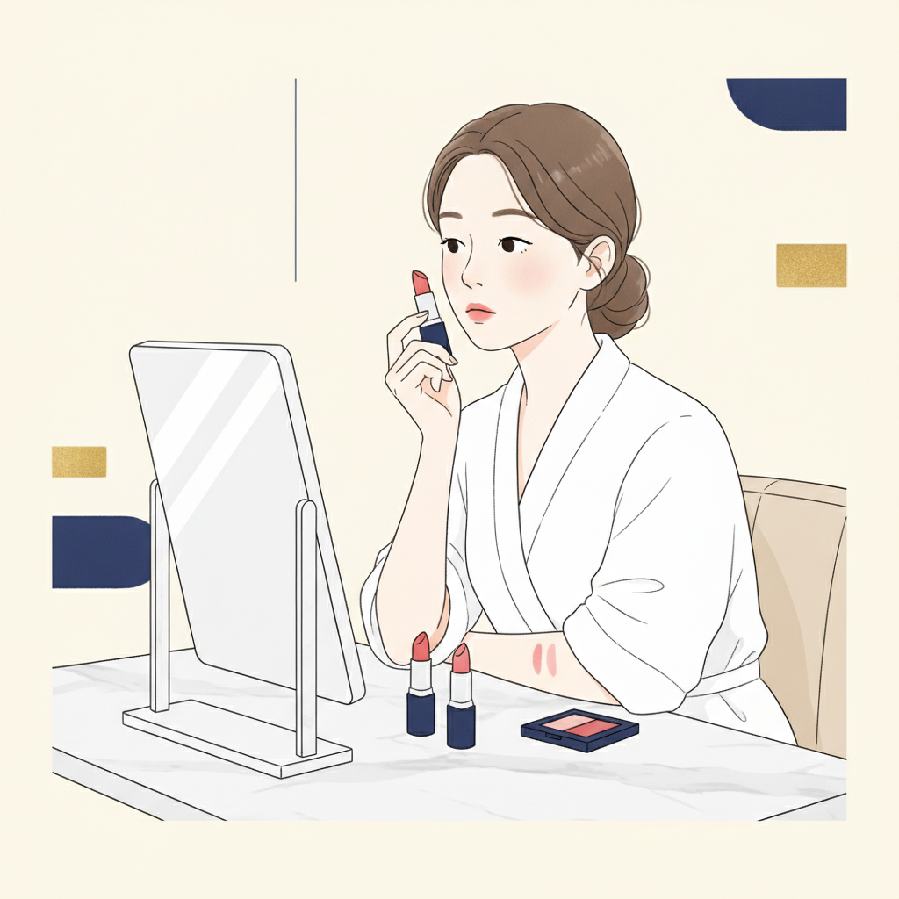
어떤 색이 나에게 맞는지 확신이 서지 않아, 거울 앞에서 대보고 또 대보게 됩니다.
게다가 이 과정에는 비용도 만만치 않게 듭니다. 립스틱 하나에도 수만 원, 아이섀도 팔레트까지 더하면 몇 개만 사도 수십만 원이 우습게 나갑니다. 그렇게 사 모은 색 중 정작 면접에 쓰는 건 한두 개뿐이고, 나머지는 몇 번 발라보지도 못한 채 서랍 속에서 굳어 갑니다. 시간도, 돈도, 확신도 얻지 못한 채 지출만 쌓이는 셈입니다.
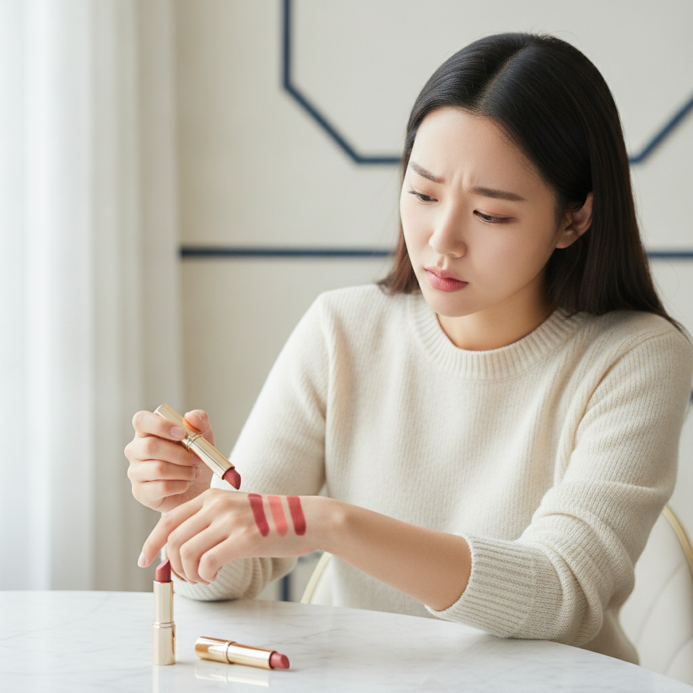
손등에 발라봐도 정작 내 얼굴에서 어떻게 보일지는 알 수 없어요 — 확신 없이 또 사게 됩니다.
매장에서 사 모으는 대신, 내 얼굴 위에서 먼저 확인합니다
기존 방식은 순서가 거꾸로였습니다. 유행하는 색을 먼저 구매하고, 집에 돌아와 발라본 뒤에야 어울리는지 아닌지를 알게 되니까요. 그 과정에서 시간과 비용이 쌓이고, 정작 면접 당일에는 확신 없이 낯선 색을 얹게 되기도 합니다. 원더풀크루의 메이크업 입혀보기는 그 순서를 바로잡아 줍니다. 내 얼굴 사진 위에 립스틱, 아이섀도, 아이라인 색을 직접 클릭해서 얹어보면, 그 색이 내 피부와 이목구비에 어떻게 자리 잡는지를 눈으로 곧바로 확인할 수 있습니다. 무언가를 사기 전에 결정을 내릴 수 있으니, 서랍 속에 잠들 색이 줄어드는 셈입니다.
사용 방식은 직관적입니다. 원하는 립스틱 색을 고르면 사진 속 입술에 실시간으로 발라지고, 아이섀도와 아이라인 역시 마찬가지로 눈가에 즉시 얹힙니다. 여기에 진하기를 조절하는 슬라이더가 함께 있어, 은은하게 스며드는 데일리한 느낌부터 또렷하게 정돈된 인상까지 단계별로 비교해볼 수 있습니다. 같은 색이라도 농도에 따라 인상이 크게 달라지는데, 그 미묘한 차이를 손끝으로 직접 조율하며 나에게 가장 어울리는 지점을 찾아가는 과정이 이 기능의 핵심입니다.
사기 전에 내 얼굴 위에서 먼저 확인하니, 드디어 나에게 꼭 맞는 색을 확신 있게 고릅니다.
화장 전과 후를 나란히, 배경까지 면접 사진처럼
색을 얹은 뒤에는 사진 가운데의 선을 좌우로 밀어보세요. 한쪽은 화장하지 않은 원본, 다른 한쪽은 색을 입힌 지금의 모습이 나란히 나타나며 전후 차이가 한눈에 들어옵니다. 어떤 색이 내 인상을 얼마나 화사하게 바꾸는지를 스스로 판단할 수 있는 가장 정직한 비교입니다. 여기에 더해 배경색을 흰색이나 블루로 바꿔볼 수 있어, 실제 승무원 면접 증명사진 위에 이 메이크업이 어떻게 보일지까지 미리 그려볼 수 있습니다. 원더풀크루에서는 이렇게 결과를 눈으로 확인하며 준비하는 과정 자체가 자신감이 된다고 믿습니다.
이 기능에서는1. 립스틱·아이섀도·아이라인 색을 클릭하면 내 얼굴에 실시간으로 발라지고, 진하기도 슬라이더로 조절합니다. 2. 사진 가운데 선을 좌우로 밀면 화장 전(원본)과 화장 후를 곧바로 비교할 수 있어요. 3. 배경색까지 흰색·블루로 바꿔 실제 면접 사진 느낌을 미리 확인합니다.
승무원 면접 메이크업, 자주 묻는 질문
Q. 승무원 면접 메이크업은 진해야 하나요? 화려함보다 단정함이 우선입니다. 또렷하되 과하지 않은 아이라인, 혈색을 살리는 코랄·로즈 계열 립, 자연스러운 아이섀도가 신뢰감 있는 인상을 만듭니다. 진하기 슬라이더로 데일리한 톤부터 또렷한 톤까지 직접 비교하며 내 얼굴에 맞는 지점을 찾아보세요.
Q. 내 피부톤에 맞는 립스틱 색을 모르겠어요. 웜톤·쿨톤을 글로만 판단하기 어렵다면, 여러 립 컬러를 내 얼굴 위에 직접 얹어 비교하는 것이 가장 확실합니다. 사기 전에 어울리는 색만 추려낼 수 있어 지출도, 실패도 줄어듭니다.
Q. 증명사진용 메이크업도 미리 볼 수 있나요? 네. 배경색을 흰색·블루로 바꿔 실제 면접 증명사진 위에서 이 메이크업이 어떻게 보일지 미리 확인할 수 있습니다.
이런 분께 특히 좋아요
승무원 면접을 앞두고 어떤 메이크업 컬러가 나에게 어울릴지 막막하신 분, 립스틱과 아이섀도를 계속 사 모으면서도 확신이 서지 않으셨던 분께 특히 도움이 됩니다. 승무원 메이크업은 화려함보다 단정하고 신뢰감 있는 인상이 중요한데, 면접 메이크업 컬러를 미리 내 얼굴에 입혀보며 찾으면 당일의 불안을 크게 덜 수 있습니다. 증명사진용 메이크업, 승무원 면접 화장, 나에게 어울리는 립스틱 컬러가 고민이셨다면 사기 전에 먼저 얹어보고 결정하시길 권합니다. 색을 고르는 일이 소비가 아니라 나를 이해하는 과정이 되도록, 원더풀크루가 함께합니다.
승무원 면접 준비 전 과정을 단계별로 한 페이지에
메이크업 컬러 찾기는 원더풀크루가 준비한 여러 단계 중 하나예요. CV 템플릿 메이커, 메이크업 컬러 찾기, 면접 사진 만들기, CV Drop·스몰톡, 비디오 면접, 그룹 디스커션, 워드슈팅, 롤플레이, 영어 테스트, 파이널 인터뷰, 그리고 현직 승무원 강의 영상까지 — 에미레이트·카타르·싱가포르·에티하드·캐세이 등 항공사 면접에 필요한 모든 단계를 STEP으로 골라서 연습할 수 있습니다.
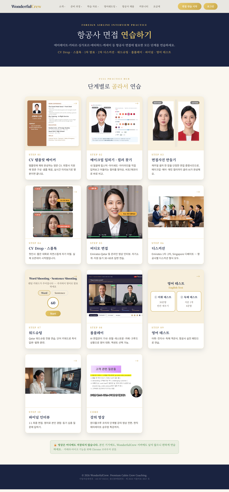
실제 화면 — STEP 01부터 파이널까지, 항공사 면접 준비 전 과정을 한 페이지에서 단계별로.
승무원 면접, 결국 표정에서 갈립니다 AI 실시간 이미지 분석으로 미소를 점수로 확인하세요
WonderfulCrew · 승무원 합격 코칭
승무원 면접 미소 연습을 검색해 보신 분이라면 한 번쯤 이런 고민을 하셨을 겁니다. "내 미소가 실제로 괜찮아 보일까", "면접 표정은 어떻게 연습해야 하나", "거울만 보고 연습하는 게 맞나." 승무원 면접에서 첫인상을 좌우하는 것은 화려한 답변이 아니라 얼굴에 머무는 표정입니다. 면접관은 지원자가 입을 열기도 전에 미소의 결, 시선의 방향, 자세의 안정감을 먼저 읽어냅니다. 그러나 정작 지원자 본인은 자신이 어떤 표정을 짓고 있는지 알기 어렵습니다. 거울 앞에서는 완벽했던 미소가 실전에서는 어색하게 굳어버리는 경우가 많고, 긴장이 쌓일수록 시선은 흔들리고 입꼬리는 내려앉습니다. 원더풀크루에서는 바로 이 지점을 데이터로 마주할 수 있도록, 카메라를 켜는 순간 표정을 실시간으로 점수화해 코칭하는 AI 실시간 이미지 분석을 마련했습니다.
거울 앞 연습만으로는 내 미소가 실제로 어떻게 보이는지 알기 어려워요.같은 얼굴도 표정에 따라 점수가 달라져요 — 밝은 미소 100점, 무표정 34점.
표정은 감이 아니라 점수로 확인해야 합니다
많은 지원자가 "웃으라"는 조언을 듣지만, 자신의 미소가 실제로 어느 정도인지 가늠할 방법이 없었습니다. AI 실시간 이미지 분석은 카메라에 비친 얼굴에서 미소·정면 응시·수평·어깨·시선·목소리·조명까지 일곱 가지 항목을 각각 읽어 실시간 점수로 보여주고, 이를 종합한 총점까지 함께 뜹니다. 무표정으로 앉아 있으면 미소 점수가 34점까지 내려가고, 입꼬리를 자연스럽게 올려 밝게 웃으면 90점 이상까지 차오릅니다. 막연한 감각이 아니라 눈에 보이는 수치로 자신의 표정을 확인할 수 있으니, 무엇을 고쳐야 하는지가 분명해집니다.
실제 화면 — 무표정이면 미소 34점, 종합 62점까지 내려가요. "미소를 더 활짝!" 코칭 메시지도 바로 떠요.
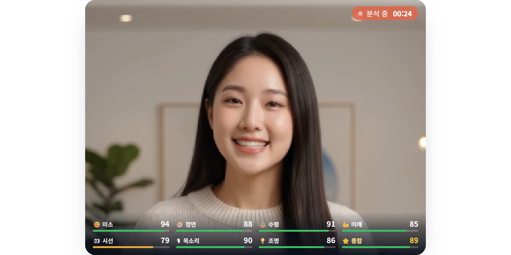
같은 얼굴, 밝게 웃으니 미소 94점 · 종합 89점 — 표정 하나로 점수가 이렇게 달라져요.
실시간 신호가 연습의 방향을 잡아줍니다
이 기능의 핵심은 점수를 매기는 데서 그치지 않고 그 자리에서 방향을 알려준다는 점입니다. 미소 점수가 떨어지면 "미소를 더 활짝! 치아가 보이게 웃어요" 같은 신호가 화면에 떠오르고, 시선이 흔들리거나 정면 응시가 흐트러지면 곧바로 반응합니다. 목소리, 자세의 수평, 어깨의 균형, 조명까지 함께 살피기 때문에, 지원자는 어느 순간에 긴장이 표정과 자세로 새어 나오는지 스스로 파악하게 됩니다. 원더풀크루에서는 이렇게 매일 반복하는 연습이 실전의 안정감을 만든다고 봅니다. 하루하루 점수를 끌어올리는 과정 자체가 면접장에서 무너지지 않는 표정을 몸에 새기는 훈련입니다.
실제 화면 — 밝게 웃으면 미소 94점, 종합 89점까지. "분석 중" 배지와 함께 실시간으로 코칭해요.카메라만 켜면 언제든 — 실시간 점수를 보며 내 미소를 스스로 교정합니다.
기록에 남지 않아 부담 없이 반복합니다
연습을 자주 하려면 부담이 없어야 합니다. AI 실시간 이미지 분석의 점수판과 신호는 오직 화면 위에만 떠오를 뿐, 녹화 영상이나 저장본에는 전혀 남지 않습니다. 몇 점을 받았든 기록으로 축적되어 남지 않으니, 실패를 걱정하지 않고 얼마든지 다시 시도할 수 있습니다. 표정이 굳는 순간을 마주하고, 다시 미소를 끌어올리고, 점수가 오르는 것을 확인하는 이 반복이 결국 정면을 응시하며 여유롭게 웃는 지원자를 완성합니다.
이 기능에서는1. 카메라를 켜면 미소·정면 응시·시선·목소리·자세(수평·어깨)·조명 일곱 가지를 각각 점수로 매기고 종합 점수까지 실시간으로 보여줍니다. 2. 무표정일 땐 미소 점수가 34점까지 떨어지며 코칭 메시지가, 밝게 웃으면 90점대로 올라가요. 3. 이 점수판과 신호는 화면 위에만 떠서 녹화 영상·저장본에는 전혀 남지 않습니다.
이런 분께 특히 좋아요
혼자 승무원 면접을 준비하며 자신의 표정을 객관적으로 확인하고 싶은 분, 거울 연습만으로는 미소가 제대로 전달되는지 확신이 서지 않는 분, 국내외 항공사 승무원 면접에서 첫인상과 미소 관리가 중요하다는 것을 알지만 어디서부터 손대야 할지 막막한 분께 특히 도움이 됩니다. 승무원 면접 준비, 승무원 미소 연습, 표정 점수 코칭, 시선 처리와 정면 응시 훈련까지 한 화면에서 데이터로 확인하고 싶다면 AI 실시간 이미지 분석이 든든한 연습 동반자가 되어 드립니다. 원더풀크루에서는 매일의 작은 반복이 합격을 만든다고 믿습니다.
승무원 영문 이력서, 이제 미루지 마세요 템플릿 고르고 채우면 오른쪽에서 실시간 완성되는 CV 메이커
WonderfulCrew · 승무원 합격 코칭
승무원 영문 이력서(CV)를 처음 준비할 때 다들 비슷한 걸 검색해요. "승무원 CV 양식", "영문 이력서 작성법", "외항사 이력서 예시"… 그만큼 막막한 관문이라는 뜻이죠. 사실 승무원 지원에서 제일 뒤로 미루게 되는 게 바로 영문 CV거든요. 한글 자기소개서는 술술 써지다가도, 영문 이력서 앞에서는 '어떤 항목을 어떤 순서로 넣지', '내 알바·인턴 경험을 승무원 자질이랑 어떻게 연결해서 쓰지' 하고 멈칫하게 돼요. 특히 처음 준비하는 분들은 시작 자체가 어렵고요. 외항사든 국내 항공사든 CV 한 장이 첫인상을 좌우하는데, 정작 양식과 영어 표현 앞에서 시간만 흘려보내기 쉬워요. 원더풀크루에서는 이 부담을 덜어드리려고, 템플릿을 고르고 내용을 채우면 이력서가 실시간으로 완성되는 CV 메이커를 준비했어요.
영문 CV는 어디서부터 어떻게 써야 할지 — 빈 화면 앞에서 시간만 흘러갑니다.
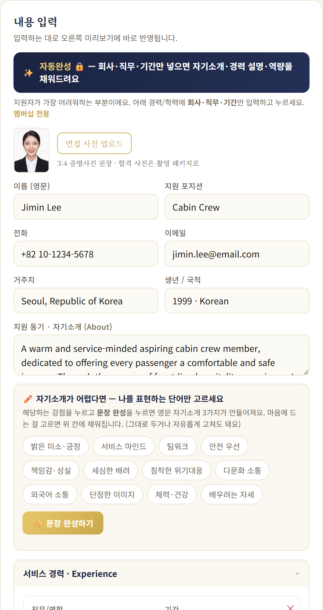
실제 화면 — 왼쪽 입력창이에요. 입력한 내용은 오른쪽 A4 이력서에 실시간으로 반영됩니다.
① 템플릿·컬러·서체를 골라요 — 종류가 이렇게 다양해요
이력서의 완성도는 내용만큼이나 첫눈에 전해지는 정돈된 인상에서 옵니다. CV 메이커에서는 클래식·투톤·헤더형·미니멀·타임라인 다섯 가지 템플릿, 열 가지가 넘는 포인트 컬러(원하는 색을 직접 고르는 기능까지), 그리고 클래식·모던·우아·심플·명조·임팩트 여섯 가지 서체를 자유롭게 조합합니다. 디자인 감각이 없어도 괜찮아요. 정해진 선택지 안에서 조합만 바꾸면 누구나 균형 잡힌 한 장을 얻습니다.
실제 화면 — 템플릿 5종 · 컬러 팔레트(내 색 직접 고르기 포함) · 서체 6종을 골라요.
② 채우면 오른쪽에서 곧바로 완성돼요
왼쪽 입력란에 경력·학력·스킬을 채워 넣으면, 오른쪽 미리보기에 이력서가 실시간으로 반영됩니다. 한 줄을 고칠 때마다 결과가 즉시 눈앞에서 바뀌기 때문에, 전체 균형을 보며 내용을 매만질 수 있어요. 아래는 실제로 완성되는 이력서 미리보기예요 — 사진·연락처·자기소개·경력·학력·스킬·자격증까지 A4 한 장에 단정하게 자리 잡습니다.
실제 완성 화면 — 인쇄·PDF와 동일한 A4 미리보기. 이대로 바로 제출할 수 있어요.
③ 영어가 막히면 — 단어만 고르면 AI가 문장을 만들어줘요
경력과 강점을 영어로 옮기는 일은 지원자 대부분이 가장 어려워하는 대목입니다. CV 메이커에서는 두 가지 방식으로 이 벽을 넘습니다. 첫째, 자동완성 — 회사·직무·기간만 넣으면 자기소개·경력 설명·역량을 영어로 채워줍니다. 둘째, 자기소개가 막힐 때 '밝은 미소·긍정', '서비스 마인드', '침착한 위기대응'처럼 나를 표현하는 단어만 고르고 문장 완성을 누르면, 영문 자기소개 세 가지가 자동으로 만들어져요. 마음에 드는 걸 고르면 그대로 채워지고, 자유롭게 고쳐도 됩니다.
실제 화면 — 회사·직무·기간만 입력하면 자기소개·경력 설명·역량을 자동으로 채워줘요.실제 화면 — 단어만 고르고 '문장 완성'을 누르면 영문 자기소개 3가지가 자동으로 만들어져요.
④ 알바·인턴 경험도 승무원 자질로 바꿔줘요 — 처음 써보는 분도 막막하지 않게
영문 CV에서 가장 많이 막히는 지점은 사실 디자인이 아니라 '내 경험을 어떻게 표현하느냐'입니다. 카페 아르바이트나 인턴 경험은 있는데, 그걸 승무원 자질과 연결해서 문장으로 옮기는 방법을 모르는 분이 많아요. CV 메이커는 호텔·프론트, 카페·레스토랑, 판매·리테일, 고객상담·CS, 항공·기내, 면세·백화점, 병원·케어, 인턴·대외활동, 관광·가이드·안내 같은 직무 유형을 눌러 빠르게 채울 수 있도록 예시를 준비했습니다. 예를 들어 카페 아르바이트를 골랐다면, "손님을 친절하게 응대했다"는 밋밋한 문장 대신 서비스 마인드·침착한 태도·팀워크·위생·안전 수칙 준수처럼 승무원 채용에서 실제로 눈여겨보는 자질 중심의 영문 문장으로 자동 완성됩니다. 목록에 없는 직무라면 내가 쓴 직무명 그대로 AI에게 맡겨 설명을 자동 생성할 수도 있어요. 처음 이력서를 써보는 분도 시작 자체를 막막해하지 않도록, 무엇을 어떻게 써야 할지부터 짚어드리는 것이 이 기능의 목적입니다.
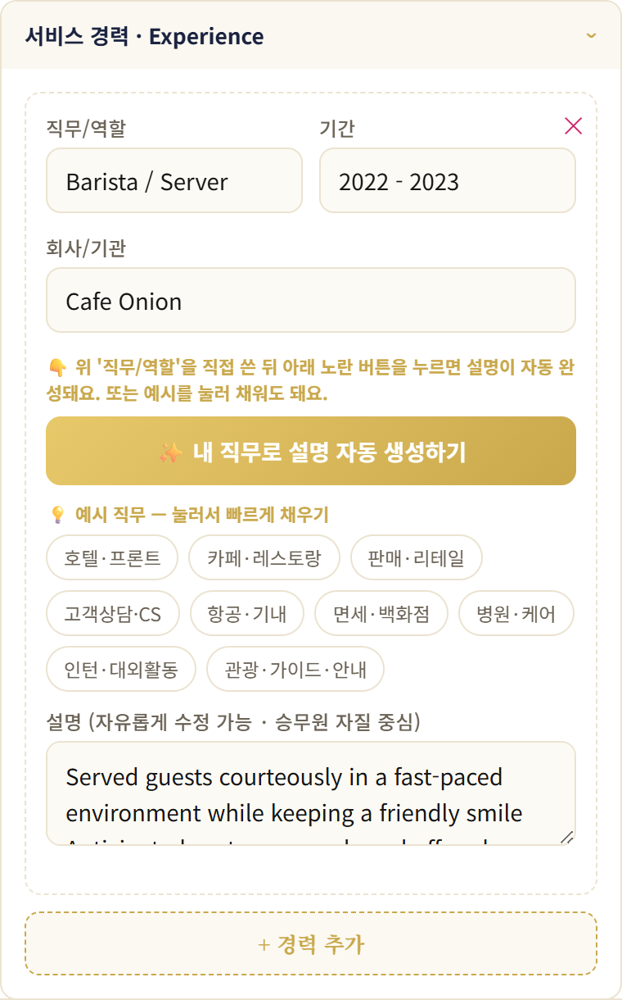
실제 화면 — 카페 아르바이트 경험 하나로, 승무원 자질 중심의 영문 경력 설명이 자동 완성돼요.
⑤ 교환학생·워킹홀리데이 같은 해외 경험도 빠뜨리지 않아요
해외에서 지내본 경험은 승무원 채용에서 특히 눈여겨보는 항목입니다. 교환학생, 어학연수, 워킹홀리데이, 해외봉사, 심지어 개인 해외여행까지 — CV 메이커에는 이런 경험만 따로 담는 해외 경험(Overseas) 항목이 있어요. 예시 버튼을 눌러 빠르게 추가하거나, 국가·기관·기간을 자유롭게 직접 입력할 수 있습니다. 이 항목 역시 '이력서에 표시' 체크 하나로 넣고 뺄 수 있어서, 해외 경험이 없는 분은 비워두면 이력서에 아예 나타나지 않습니다. 있는 분만, 있는 만큼만 자연스럽게 담아내는 방식입니다.
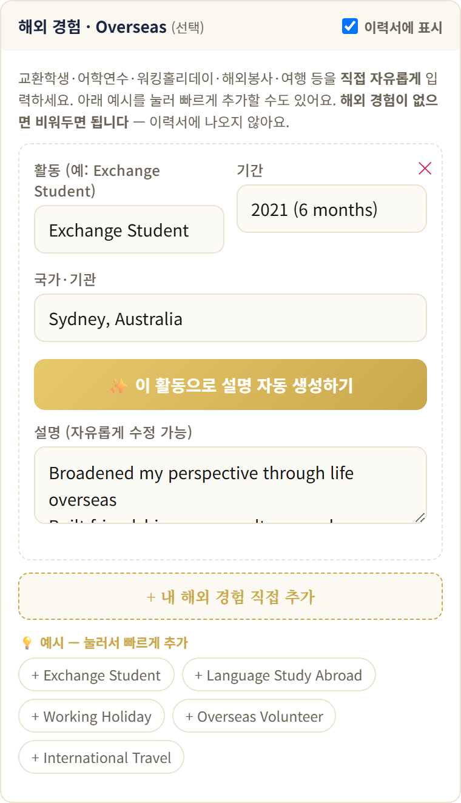
실제 화면 — 교환학생·워킹홀리데이 같은 해외 경험을 예시 버튼으로 빠르게 추가해요.
⑥ 넣을 항목·뺄 항목을 자유롭게 골라요
지원하는 항공사와 나의 강점에 따라 이력서 구성은 달라져야 합니다. CV 메이커는 해외 경험, 스킬, 어학, 자격증 같은 항목을 '이력서에 표시' 체크 하나로 넣고 뺄 수 있어요. 경력·학력은 여러 개를 추가하거나 삭제할 수 있고, 순서도 마음대로. 글자 크기(작게·보통·크게)도 조절할 수 있어서, 내용이 많으면 살짝 줄이고 적으면 여백 없이 꽉 채울 수 있습니다. 강조하고 싶은 것만 남겨 나에게 꼭 맞는 한 장으로 구성합니다. 완성한 이력서는 PDF로 저장하거나 편집용 Word로 내려받아 그대로 제출하면 됩니다.
디자인과 영어 표현 걱정 없이, 완성한 이력서를 손에 들고 확인하는 순간.
이 기능에서는1. 템플릿 5종·컬러 팔레트(내 색 직접 고르기)·서체 6종·글자 크기까지 조합해 나답게 디자인해요. 2. 채우면 오른쪽 A4 미리보기에 실시간 완성 — 자동완성과 '단어 고르면 문장 완성' AI로 영어 걱정도 끝. 3. 알바·인턴 경험을 직무 유형별로 골라 승무원 자질 중심 문장으로, 해외 경험도 예시 버튼으로 빠르게 채워요. 4. 항목을 자유롭게 넣고 빼서 구성하고, PDF·Word로 내려받아 바로 제출해요.
이런 분께 특히 좋아요
승무원 영문 이력서를 태어나서 처음 써보는 분, 알바나 인턴 경험은 있는데 그걸 승무원 자질과 어떻게 연결해서 써야 할지 막막한 분, 교환학생·워킹홀리데이 같은 해외 경험을 이력서에 어떻게 담아야 할지 고민되는 분, 외국 항공사와 국내 항공사에 동시에 지원하며 영문 CV 양식이 필요한 분께 특히 도움이 됩니다. 승무원 CV, 영문 이력서, 외항사 지원 서류를 준비하는 과정에서 양식과 영어 표현에 발목 잡히지 않고, 내용에만 집중할 수 있도록 원더풀크루가 곁에서 돕겠습니다.
영상 면접, 화면 너머 첫인상을 설계하다 카메라 앞 30초 스몰톡부터 실시간 표정 분석까지
WonderfulCrew · 승무원 합격 코칭
승무원 화상 면접과 영상 면접을 앞두고 "비대면 면접 어떻게 준비하지", "영상 면접 스몰톡 뭐라고 하지", "카메라 앞에서 안 떨려면"을 검색하는 지원자가 많습니다. 비대면 영상 면접은 대면 면접과는 또 다른 긴장을 안깁니다. 렌즈를 응시하는 시선, 화면에 비친 내 표정, 마이크로 전해지는 목소리의 결까지, 평소라면 의식하지 않았을 요소들이 고스란히 평가의 대상이 되기 때문입니다. 특히 승무원 채용에서 점점 비중이 커지는 화상 면접과 첫인사 스몰톡은, 실전과 똑같은 환경에서 반복해 보지 않으면 좀처럼 익숙해지기 어렵습니다. 원더풀크루에서는 바로 이 지점을 정면으로 마주하도록 돕습니다.
카메라 앞에만 서면 굳어버리는 긴장 — 실전과 같은 환경에서 반복해야 익숙해집니다.
실제 비디오 면접처럼, 카메라를 켜고 시작합니다
연습이 실전과 멀어질수록 준비의 효용은 줄어듭니다. 원더풀크루에서는 실제 비디오 면접과 동일하게 카메라를 켜고 답변을 녹화하며 연습합니다. AI 면접관과 첫 30초 동안 스몰톡을 음성으로 주고받으며, 딱딱한 질의응답이 아니라 자연스러운 대화의 온도를 먼저 익힙니다. 첫인사의 여유, 눈맞춤의 안정감, 목소리의 톤은 화면 너머에서 지원자의 태도를 가장 먼저 전하는 신호이기에, 이 30초를 어떻게 채우느냐가 면접 전체의 인상을 좌우합니다.
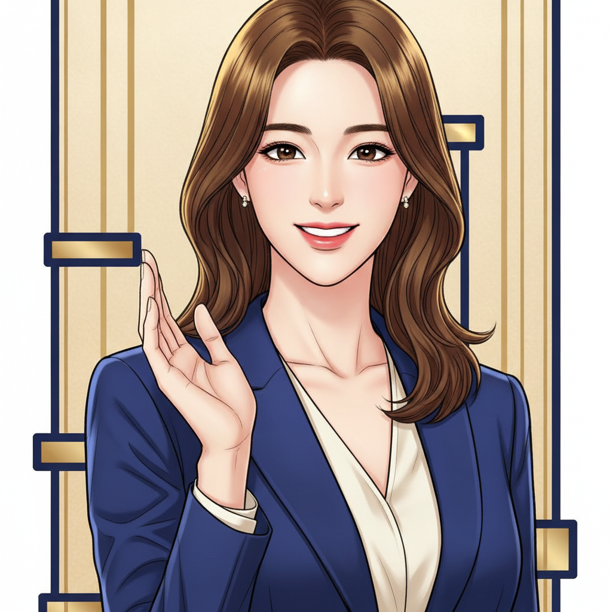
여유로운 첫인사와 안정된 미소 — 실전처럼 반복하면 화면 너머 첫인상은 분명히 달라집니다.
답변하는 동안, 표정이 실시간 점수로 보입니다
가장 큰 차별점은 답변 중 얼굴을 자동으로 인식해 화면 오른쪽에 점수가 실시간으로 뜬다는 점입니다. 미소, 시선, 목소리, 얼굴 기울기가 각각의 지표로 그래프에 나타나, 내가 말하는 순간 어떤 표정을 짓고 있었는지를 눈으로 확인할 수 있습니다. 스스로는 잘 웃고 있다고 느꼈지만 화면 속 표정은 굳어 있는 경우가 적지 않습니다. 감각에 의존하던 부분을 객관적인 수치로 되돌아보면, 어느 구간에서 긴장이 표정을 삼켰는지가 선명하게 드러납니다.
답변은 텍스트로 남아, 표현을 다듬는 자료가 됩니다
말은 흘러가지만 기록은 남습니다. 답변은 텍스트로도 함께 기록되어, 내가 실제로 어떤 단어와 문장을 사용했는지 다시 확인할 수 있습니다. 즉흥적으로 나온 표현을 복기하고, 반복되는 습관어를 걸러내며, 더 품격 있는 어휘로 다듬어 가는 과정은 영상 속 표정 개선만큼이나 중요합니다. 표정과 음성, 그리고 언어를 함께 점검할 때 비로소 화면 너머의 첫인상이 온전히 완성됩니다.
답변이 텍스트로 남아, 어떤 표현을 썼는지 차분히 다시 확인하고 다듬을 수 있어요.
이 기능에서는1. AI 면접관과 첫 30초 스몰톡을 실전처럼 음성으로 주고받습니다. 2. 답하는 동안 얼굴을 자동 인식해 미소·시선·목소리·기울기 점수가 실시간 그래프로 떠요. 3. 답변은 텍스트로도 기록돼 어떤 표현을 썼는지 다시 확인할 수 있어요.
이런 분께 특히 좋아요
비대면 화상 면접과 영상 면접을 앞두고 카메라 앞에서 유독 긴장하시는 분, 첫인사 스몰톡을 어떻게 열어야 할지 막막하신 분, 내 미소와 시선이 화면에 어떻게 비치는지 객관적으로 확인하고 싶으신 분께 이 연습을 권합니다. 승무원 영상 면접은 표정과 목소리, 언어가 한 화면에서 동시에 평가되는 자리입니다. 실시간 얼굴 분석과 스몰톡 연습을 꾸준히 반복하면, 화면 속 첫인상은 준비할수록 분명히 안정됩니다.
승무원 면접 롤플레이, 돌발 상황 응대력을 기르는 법 기내·호텔·레스토랑 상황을 AI 면접관과 영어로 실시간 연습
WonderfulCrew · 승무원 합격 코칭
외국 항공사 면접을 준비하는 분들이 자주 찾는 것이 "승무원 롤플레이 예시", "기내 상황 대응 영어", "컴플레인 응대 표현"입니다. 외국 항공사 면접에서 합격을 가르는 순간은 정형화된 자기소개가 아니라, 예상하지 못한 상황이 던져졌을 때 지원자가 보여 주는 태도와 언어입니다. 좌석 문제로 언성을 높이는 승객, 기내식이 소진된 상황, 컴플레인이 이어지는 순간에 당황하지 않고 침착하게 응대하는 능력이야말로 면접관이 가장 눈여겨보는 자질입니다. 실제 서비스 현장은 매뉴얼대로만 흘러가지 않기에, 돌발 상황을 다루는 순발력과 품위 있는 영어 표현을 미리 몸에 익혀 두는 준비가 반드시 필요합니다. 원더풀크루에서는 이 지점을 롤플레이로 정면 돌파합니다.
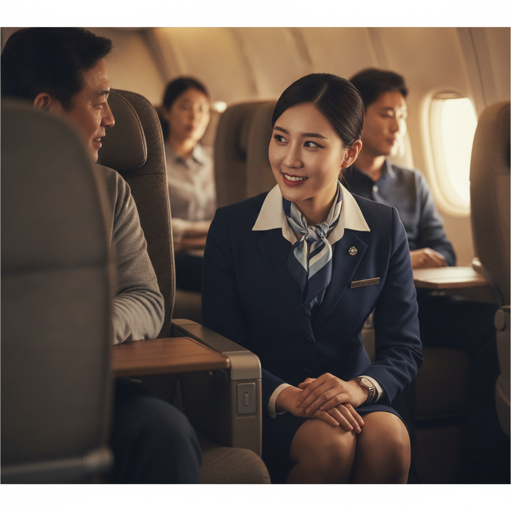
좌석·기내식·컴플레인 — 실제 기내처럼 돌발 상황에 침착하게 응대하는 힘을 기릅니다.
상황을 고르면, 진짜 응대가 시작됩니다
기내, 호텔, 레스토랑, 카페, 크루즈까지 서비스 현장별 응대 상황을 직접 선택할 수 있습니다. 상황을 고르는 순간 AI 면접관이 까다로운 승객이나 예기치 못한 돌발 상황을 제시하고, 지원자는 그 자리에서 영어로 응대하게 됩니다. 대본을 외우는 연습이 아니라, 실제 현장처럼 흐름 속에서 판단하고 말하는 훈련이기에 면접장에서의 긴장이 자연스럽게 줄어듭니다.
영국·미국 엑센트로, 실제 면접 환경처럼
외국 항공사 면접에서는 면접관의 억양과 말의 속도에 익숙해지는 것도 중요한 준비입니다. 영국식과 미국식 엑센트를 선택해 연습할 수 있어, 귀에 익은 환경에서만 잘하는 것이 아니라 어떤 억양이 상대라도 흔들리지 않는 응대력을 키울 수 있습니다. 실제 어세스먼트 데이의 분위기를 최대한 가깝게 재현한 셈입니다.
매일 반복하며 자기 언어로 만드는 과정
돌발 상황 응대는 하루아침에 완성되지 않습니다. 같은 상황이라도 어떤 표현으로 시작하느냐, 승객의 감정을 어떻게 먼저 살피느냐에 따라 인상이 달라집니다. 원더풀크루에서는 상황을 무제한으로 바꿔 가며 반복 연습할 수 있어, 정해진 답을 외우는 대신 자기만의 응대 언어를 다져 나가게 됩니다. 이 꾸준한 반복이 결국 면접장에서의 여유로 이어집니다.
매일 상황을 바꿔 가며 반복 — 정해진 답이 아니라 나만의 응대 언어를 만듭니다.
이 기능에서는1. 기내·호텔·레스토랑·카페·크루즈 등 응대 상황을 고릅니다. 2. AI 면접관이 까다로운 승객이나 돌발 상황을 제시하면 영어로 실시간 응대해요. 3. 영국·미국 등 엑센트를 선택해 실제 외항사 면접 환경처럼 연습합니다.
이런 분께 특히 좋아요
외국 항공사 승무원 면접을 준비하며 영어 롤플레이와 돌발 상황 응대가 막막하게 느껴지는 분, 기내 서비스 영어 표현을 실전처럼 연습하고 싶은 분, 어세스먼트 데이의 그룹 상황과 컴플레인 응대에 자신감을 갖고 싶은 분께 잘 맞습니다. 정해진 답안을 넘어 상황마다 유연하게 대응하는 힘을 기르고 싶은 지원자라면, 매일의 롤플레이 연습이 합격으로 가는 가장 단단한 발판이 되어 줍니다.
승무원 면접에서 그룹 디스커션은 많은 지망생이 가장 어려워하는 관문입니다. 혼자 준비하는 자기소개나 예상 질문 답변과 달리, 그룹 디스커션은 처음 만난 지원자들과 실시간으로 의견을 주고받으며 자신의 논리와 태도를 동시에 드러내야 하기 때문입니다. 게다가 방식은 항공사마다 크게 다릅니다. Emirates는 주어진 주제를 정리해 발표하고 실전 상황에서 우선순위를 토론하며, Singapore Airlines는 찬반이 갈리는 디베이트를, Qatar는 즉석 영어 발표를 요구합니다. 형식을 모른 채 현장에 들어서면, 평소 실력과 무관하게 당황하기 쉽습니다. 원더풀크루에서는 이 차이를 미리 몸에 익히는 데 준비의 초점을 둡니다.
먼저 말하기도, 끝까지 침묵하기도 어려운 자리 — 형식을 모르면 실력과 무관하게 당황합니다.
왜 그룹 디스커션에서 당락이 갈릴까요
평가관이 그룹 디스커션에서 보는 것은 결론의 정답 여부가 아닙니다. 의견을 어떤 순서로 꺼내는지, 근거를 어떻게 쌓아 올리는지, 그리고 다른 지원자의 발언에 어떤 태도로 반응하는지가 핵심입니다. 먼저 말하려 서두르다 논점을 놓치는 경우도, 끝까지 침묵하다 존재감을 잃는 경우도 모두 아쉬운 결과로 이어집니다. 승무원이라는 직무 자체가 팀 안에서 조율하고 배려하는 역량을 요구하기에, 토론 속 태도가 곧 직무 적합성의 척도가 됩니다. 결국 발언 순서와 논리 전개, 그리고 매너, 이 세 가지를 균형 있게 갖추는 것이 관건입니다.
가장 많이 말하는 사람이 아니라, 경청하고 연결하며 매너 있게 이끄는 사람이 눈에 띕니다.
발언 순서와 논리 전개의 품격
좋은 발언은 타이밍에서 시작됩니다. 무리하게 첫 발언을 차지하기보다, 흐름을 읽고 의미 있는 지점에서 자신의 관점을 더하는 편이 훨씬 안정적입니다. 앞선 지원자의 의견을 짧게 정리한 뒤 자신의 견해를 얹으면, 경청하는 사람이라는 인상과 논리를 함께 전달할 수 있습니다. 주장에는 반드시 근거가 따라야 하며, 반대 의견을 마주할 때도 상대를 존중하며 대안을 제시하는 태도가 필요합니다. 원더풀크루에서는 이러한 발언의 결을 항공사별 실제 기출 형식에 맞춰 반복 연습하고, 순서와 논리를 하나하나 짚어 드립니다.
항공사별 형식에 맞춘 실전 연습
같은 토론이라도 Emirates의 발표형, Singapore의 디베이트형, Qatar의 즉석 발표형은 요구하는 근육이 다릅니다. 발표형에서는 주어진 주제를 구조적으로 정리하는 능력이, 디베이트형에서는 반대 입장을 논리로 받아내는 순발력이, 즉석 발표형에서는 짧은 시간 안에 생각을 정돈하는 집중력이 필요합니다. 실전 화면에서는 두 지망생이 실제 주제를 놓고 실시간으로 의견을 주고받으며, 자신이 어느 지점에서 강하고 어느 지점에서 보완이 필요한지 명확히 확인할 수 있습니다. 매일의 반복이 현장의 긴장을 익숙함으로 바꿔 놓습니다.
항공사별 디스커션1. Emirates — 1차는 주어진 주제를 정리해 발표, 2차는 실전 기출 상황에서 우선순위를 토론합니다. 2. Singapore Airlines — 찬반이 정해지면 AI가 반대 입장에서 맞받아치는 디베이트. 3. Qatar — 랜덤 키워드를 받고 즉석에서 1분 영어 발표(워드슈팅). 4. 기타 항공사(Etihad·Cathay 등) — 신규 노선·친환경·위기 PR·팀 갈등 등 다양한 기출을 종합 토론.
이런 분께 특히 좋아요
그룹 디스커션이 유독 부담스러운 지망생, 영어로 의견을 정리해 말하는 데 자신이 없는 분, Emirates·Singapore·Qatar 등 항공사별로 방식이 달라 무엇부터 준비해야 할지 막막한 분께 특히 도움이 됩니다. 발언 순서를 잡는 감각, 논리를 쌓는 구조, 상대를 존중하는 매너까지 실전 시나리오로 다듬고 싶은 분이라면 원더풀크루의 항공사별·라운드별 그룹 디스커션 연습이 든든한 준비가 되어 드립니다.
승무원 영어 면접, 순발력이 합격을 가른다 워드슈팅 · 문장 슈팅으로 즉흥 스피치를 몸에 익히는 법
WonderfulCrew · 승무원 합격 코칭
외국 항공사 면접장에서 지원자를 가장 당황하게 만드는 순간은 예상하지 못한 질문을 마주했을 때입니다. 미리 준비한 답변이 통하지 않을 때, 짧은 정적 속에서 표정이 굳어 버리는 분들이 많습니다. 특히 Qatar Airways처럼 그 자리에서 단어 하나, 문장 하나를 던지고 즉석 반응을 살피는 방식에서는, 문법의 완성도보다 얼마나 자연스럽게 말문을 여느냐가 인상을 좌우합니다. 영어 실력이 부족해서가 아니라, 즉석에서 입을 여는 훈련을 해 본 적이 없어서 멈추는 것입니다. 원더풀크루에서는 이 순발력을 타고나는 재능이 아니라 반복으로 다듬는 기술로 봅니다.
영어 실력이 부족해서가 아니라, 즉석에서 입을 여는 훈련을 안 해봐서 멈추는 거예요.
왜 즉흥 스피치가 당락을 결정할까요
면접관은 완벽한 문장을 원하는 것이 아니라, 낯선 상황에서 승객을 응대할 수 있는 사람인지를 봅니다. 기내에서는 매뉴얼에 없는 질문이 수시로 쏟아집니다. 그때 잠시 머뭇거리더라도 이내 침착하게 말을 이어 가는 사람이 신뢰를 얻습니다. 준비된 대본을 읽는 듯한 답변보다, 주어진 화제를 자기 언어로 풀어내는 태도가 더 높은 평가를 받는 이유입니다. 워드슈팅은 바로 그 태도를 연습으로 옮겨 놓은 훈련입니다.
60초 안에 말문을 여는 감각
화면에는 단어 또는 문장이 무작위로 떠오르고, 곧바로 60초 타이머가 흐릅니다. 완벽한 문장을 짜려고 멈추는 순간 시간은 사라지므로, 지원자는 자연스럽게 생각과 발화를 동시에 진행하는 감각을 익히게 됩니다. 처음에는 어색하게 끊기던 말이 회를 거듭할수록 매끄럽게 이어지고, 어떤 주제가 나와도 첫 문장을 여는 속도가 눈에 띄게 빨라집니다. 원더풀크루에서는 이렇게 발화량 자체를 늘리는 과정이 자신감의 토대가 된다고 봅니다.
카메라를 켜고, 내 표정까지 실시간으로 관찰하며
워드슈팅은 목소리만 연습하는 데서 그치지 않습니다. 카메라를 켜면 비디오 면접처럼 내 얼굴이 화면에 나오고, 바로 옆에서 미소·시선·기울기·목소리를 실시간 점수로 분석해 줍니다. 즉석에서 말문을 여는 순발력과 함께, 말하는 동안의 표정과 태도까지 스스로 관찰하며 다듬을 수 있어요. 입꼬리가 내려가면 "입꼬리 올려주세요", 잘하고 있으면 "미소 아주 좋아요!" 같은 신호가 얼굴 옆에 바로 떠오릅니다. 실전 면접에서 중요한 건 정확한 답변만이 아니라, 낯선 질문 앞에서도 흔들리지 않는 표정과 태도이기 때문입니다.
실제 화면 — 카메라를 켜면 내 모습이 나오고, 미소·시선·기울기·목소리가 실시간 점수로 분석돼요.
Word 모드와 Sentence 모드, 단계적으로
Word 모드는 단어 하나를 실마리 삼아 짧은 이야기를 확장하는 연습에 알맞고, Sentence 모드는 주어진 문장을 받아 자기 의견과 경험으로 이어 가는 심화 훈련에 어울립니다. 부담 없이 단어부터 시작해 문장으로 넘어가면, 즉흥 발화의 폭과 깊이가 함께 자랍니다. 매일 몇 분씩 반복하는 것만으로도, 면접장에서 예상 밖의 질문을 만났을 때 흔들리지 않는 담대함이 몸에 배어 갑니다.
이 기능에서는1. Word 모드는 단어 하나, Sentence 모드는 문장 하나가 랜덤으로 주어집니다. 2. 60초 타이머가 도는 동안 멈추지 않고 즉석에서 영어로 말해요. 3. 실전에서 당황하지 않도록 순발력과 발화량을 함께 키웁니다.
이런 분께 특히 좋아요
Qatar Airways 즉석 영어 질문이 걱정되는 분, 외국 항공사 승무원 영어 면접에서 예상 밖 질문에 말문이 막혔던 분, 영어 순발력과 즉흥 스피치를 체계적으로 늘리고 싶은 분께 워드슈팅을 권합니다. 하루 몇 분의 즉석 영어 발표 훈련이 쌓이면, 어떤 화제가 주어져도 침착하게 자기 언어로 답하는 힘이 생깁니다. 원더풀크루의 승무원 합격 코칭은 이렇게 매일의 연습을 실전의 품격으로 이어 줍니다.
승무원 영어, 감이 아니라 숫자로 확인하세요 어휘 30문항과 독해 8문항으로 완성하는 실전 점검
WonderfulCrew · 승무원 합격 코칭
승무원을 준비하시는 분들께서 가장 자주 하시는 말씀 중 하나는 "제 영어가 지금 어느 정도일까요"입니다. 막연히 부족하다고 느끼면서도, 정작 무엇이 약한지는 손에 잡히지 않습니다. 회화는 되는 것 같은데 면접 영어에서는 말문이 막히고, 지문은 읽히는 것 같은데 세부 질문에서는 흔들립니다. 이런 불안은 실력 자체보다 '내 수준을 숫자로 확인해 본 적이 없다'는 데서 옵니다. 원더풀크루에서는 이 막연함을 걷어내기 위해, 항공사 실전 영어 패턴을 그대로 담은 영어 테스트로 지금 이 순간의 나를 정확히 측정하도록 돕고 있습니다.
회화는 되는 것 같은데 면접 영어는 흔들린다면 — 먼저 내 수준을 숫자로 확인하세요.
영어 테스트 English Test
① 어휘 테스트30문항 빈칸 채우기
② 독해 테스트지문 1개 8문항
어휘 30문항, 전치사 하나까지 짚어 드립니다
첫 번째 관문은 30문항의 어휘 빈칸 채우기입니다. 단순히 단어의 뜻을 아는지 묻는 데 그치지 않고, 기내 서비스와 안전, 고객 응대 상황에서 실제로 쓰이는 표현과 전치사의 결합을 점검합니다. 예컨대 같은 동사라도 어떤 전치사와 짝을 이루느냐에 따라 의미가 달라지는 지점, 격식 있는 응대 어휘와 일상 회화 어휘의 미묘한 차이 같은 것들입니다. 객관식으로 빠르게 풀어 나가는 동안, 아는 것과 헷갈리는 것이 자연스럽게 갈라집니다. 채점이 끝나면 몇 개를 맞혔는지가 아니라, 어떤 유형에서 반복해 흔들리는지가 눈에 들어옵니다.
독해 8문항, 실제 면접 영어 수준으로
두 번째 관문은 지문 하나에 딸린 8문항의 독해 테스트입니다. 짧은 문장을 단편적으로 묻는 대신, 하나의 완결된 지문을 놓고 전체 흐름과 세부 정보를 함께 확인하도록 구성했습니다. 핵심 문장을 붙잡는 힘, 문맥으로 낯선 단어를 유추하는 감각, 질문이 요구하는 바를 정확히 읽어 내는 집중력을 한 번에 점검할 수 있습니다. 실제 면접에서 마주하는 영어의 밀도에 가깝게 설계되어 있어, 문제를 풀고 나면 자신이 어느 지점에서 속도를 잃는지 스스로 느끼게 됩니다.
숫자로 확인하고, 약한 곳부터 채웁니다
측정의 진짜 가치는 점수 그 자체가 아니라 다음 걸음을 정해 준다는 데 있습니다. 원더풀크루에서는 어휘와 전치사, 독해를 객관식으로 풀며 항공사 실전 영어 패턴을 점검하고, 그 결과를 숫자로 확인해 약한 부분을 먼저 보완하도록 안내합니다. 오늘의 결과는 오늘의 나일 뿐, 반복해 풀며 변화를 지켜보는 과정에서 실력은 눈에 보이게 쌓입니다. 매일의 작은 점검이 면접장에서의 안정된 영어로 이어집니다.
이 기능에서는1. 어휘 테스트 — 30문항, 항공사 실전 어휘와 전치사를 빈칸 채우기로 점검합니다. 2. 독해 테스트 — 지문 1개에 8문항, 실제 면접 영어 수준으로 독해력을 연습해요.
이런 분께 특히 좋아요
승무원 영어 준비를 어디서부터 시작해야 할지 막막하신 분, 회화는 익숙하지만 면접 영어와 항공사 실전 어휘가 낯선 분, 독해 속도와 정확도를 함께 끌어올리고 싶은 분께 이 영어 테스트를 권해 드립니다. 국내외 항공사 승무원 채용을 준비하며 자신의 영어 수준을 객관적인 숫자로 확인하고 싶은 분이라면, 어휘 30문항과 독해 8문항으로 오늘의 실력을 진단하고 약한 부분부터 차근히 보완해 보시길 바랍니다. 감이 아니라 데이터로 준비할 때, 면접장에서의 영어는 한결 단단해집니다.
승무원 면접 실전 직전, 파이널 종합 분석으로 완성하는 마지막 점검 미소·답변·태도까지 데이터로 확인하는 종합 실력 리포트
WonderfulCrew · 승무원 합격 코칭
실전을 앞둔 마지막 며칠은 그동안의 준비가 진짜 실력으로 자리 잡는 결정적인 시간입니다. 많은 지원자분들이 이 시점에 무엇을 더 해야 할지 몰라 막연한 불안 속에서 시간을 흘려보내곤 합니다. 원더풀크루에서는 바로 이 실전 직전의 시간을 가장 중요하게 여깁니다. 파이널 · 종합 분석은 실제 면접장과 가장 가까운 환경에서 최종 점검을 진행하고, 그동안 쌓아온 연습 데이터를 한자리에 모아 지금의 준비 상태를 정확히 비춰 드리는 단계입니다.
실전 직전의 불안을, 데이터로 확인한 준비 상태가 확신으로 바꿔줍니다.
실전과 가장 가까운 환경에서의 최종 점검
파이널 단계에서는 면접관 유형과 지원 항공사, 영어 엑센트까지 선택해 실제 면접장과 유사한 상황을 구성합니다. 실시간 자막과 함께 질문이 이어지고, 지원자분은 실전과 같은 긴장감 속에서 답변을 완성해 나갑니다. 익숙한 연습 환경이 아니라 실전에 준하는 조건에서 스스로를 점검할 때, 비로소 준비의 완성도가 선명하게 드러납니다. 원더풀크루에서는 이 과정을 통해 지원자분이 실전 당일의 흐름을 미리 몸에 익히도록 돕습니다.
미소·답변·태도, 항목별 데이터로 보는 나의 실력
종합 분석 리포트는 그동안의 연습 기록을 하나로 모아 지금의 실력을 항목별로 보여 드립니다. 미소의 자연스러움, 답변의 구성과 전달력, 태도와 자세의 안정감까지 각 영역을 데이터로 확인할 수 있습니다. 막연히 '잘하고 있다'는 느낌이 아니라, 어느 부분이 이미 충분히 무르익었고 어느 부분에 마지막 힘을 실어야 하는지를 구체적인 지표로 마주하게 됩니다. 남은 시간을 어디에 집중할지 스스로 판단할 수 있게 되는 것, 그것이 이 리포트의 가치입니다.
1:1 코치 피드백으로 완성하는 실전 준비
데이터가 방향을 알려 준다면, 그 방향을 실전의 완성도로 끌어올리는 것은 사람의 몫입니다. 파이널의 마지막은 1:1 코치 피드백으로 마무리됩니다. 리포트에 드러난 항목을 함께 짚으며, 지원자 개개인의 강점을 실전에서 어떻게 드러낼지, 아쉬운 부분을 어떤 태도로 보완할지를 세심하게 다듬습니다. 반복된 연습이 데이터로 정리되고, 사람의 눈으로 마지막을 손질할 때 준비는 비로소 합격을 향한 확신으로 바뀝니다.
이 기능에서는1. 실전 직전 종합 점검과 그동안의 연습 데이터를 모은 실력 분석 리포트를 받습니다. 2. 미소·답변·태도 등 항목별로 부족한 부분을 데이터로 확인해요. 3. 마지막은 1:1 코치 피드백으로 실전 준비를 완성합니다.
이런 분께 특히 좋아요
승무원 면접을 코앞에 두고 마지막 점검이 필요한 분, 그동안의 연습이 실제로 어느 정도의 실력이 되었는지 객관적인 데이터로 확인하고 싶은 분께 특히 도움이 됩니다. 미소와 답변, 태도 중 어느 부분을 더 보완해야 할지 스스로 판단이 서지 않는 분, 실전 직전의 불안을 구체적인 준비로 바꾸고 싶은 분이라면 파이널 종합 분석이 든든한 마지막 관문이 되어 드립니다. 원더풀크루에서는 실전 직전 종합 점검과 실력 분석 리포트, 1:1 코치 피드백까지 제공해 그동안의 연습을 합격으로 완성합니다.
승무원 면접 준비를 하다 보면 "내가 지금 잘하고 있는 걸까"라는 물음 앞에서 막막해질 때가 많습니다. 오늘 답변이 어제보다 나아졌는지, 어떤 부분이 여전히 부족한지를 스스로 판단하기란 쉽지 않기 때문입니다. 원더풀크루에서는 이 막연함을 데이터로 풀어냅니다. 매일의 연습이 흩어지지 않고 하나의 기록으로 쌓이면, 그 자체가 가장 정직한 성장의 증거가 됩니다. 감이나 기분이 아니라 축적된 수치로 자신을 바라볼 때, 준비의 방향은 비로소 또렷해집니다.
"내가 지금 잘하고 있는 걸까?" — 감으로는 나아지고 있는지 알기 어렵습니다.실제 화면 — 종합 점수·등급과 5개 역량 레이더 차트로 내 실력을 한눈에.
흩어진 연습이 하나의 실력으로 모입니다
연습을 아무리 열심히 해도 기록으로 남지 않으면 어제의 나와 오늘의 나를 비교할 길이 없습니다. 원더풀크루에서는 매 연습의 점수가 자동으로 기록되어 종합 실력으로 분석됩니다. 종합 점수와 등급이 한자리에 정리되고, 다섯 가지 핵심 역량이 레이더 차트로 시각화되어 내 실력의 전체 윤곽을 한눈에 담아냅니다. 어느 한 항목에 치우쳐 있는지, 고르게 다져지고 있는지가 그림 하나로 드러나기에, 준비의 균형을 스스로 가늠할 수 있습니다.
강점은 살리고, 보완점은 분명히
유창성·자신감·발음·서비스 마인드를 비롯한 항목별 점수는 각각 우수·양호·보통의 상태로 정돈되어 리포트로 전달됩니다. 무엇이 이미 나의 강점으로 자리 잡았는지, 어느 영역을 조금 더 다듬어야 하는지가 명료하게 구분됩니다. 막연히 "더 잘해야지"가 아니라, 정확히 어디에 힘을 실어야 하는지가 손에 잡히는 순간입니다. 강점은 면접장에서 나를 돋보이게 하는 무기가 되고, 보완 영역은 다음 연습의 분명한 목표가 됩니다.
다음 한 걸음의 방향을 잡아드립니다
점수를 확인하는 데서 그치지 않습니다. 코칭 인사이트가 지금 무엇을 더 연습해야 할지, 어떤 순서로 실력을 쌓아가면 좋을지 방향을 제시합니다. 하루하루의 작은 연습이 데이터로 누적되며 성장 곡선을 그려낼 때, 준비의 여정은 불안이 아니라 확신으로 채워집니다. 꾸준함이 실력이 되는 과정을 눈으로 확인하는 일, 그것이 합격으로 가는 가장 단단한 토대가 됩니다.
매일의 연습이 데이터로 쌓여 성장 곡선을 그릴 때, 불안은 확신으로 바뀝니다.
이 기능에서는1. 종합 점수·등급과 5개 역량 레이더 차트로 내 실력을 한눈에 봅니다. 2. 항목별 점수·상태(우수·양호·보통)와 강점·보완 영역을 리포트로 받아요. 3. 무엇을 더 연습해야 할지 코칭 인사이트로 방향을 잡습니다.
이런 분께 특히 좋아요
혼자 승무원 면접을 준비하며 자신의 실력을 객관적으로 점검하고 싶은 분, 매일 연습은 하는데 나아지고 있는지 확신이 서지 않는 분께 성장 리포트는 든든한 이정표가 됩니다. 외국 항공사와 국내 항공사 면접을 함께 준비하며 유창성·자신감·발음·서비스 마인드를 고르게 다지고 싶은 지원자, 강점과 보완점을 데이터로 확인해 남은 기간을 효율적으로 쓰고 싶은 분께 특히 도움이 됩니다. 원더풀크루에서는 매일의 연습이 종합 실력 분석으로 이어져, 합격까지의 방향을 또렷하게 밝혀드립니다.
혼자 준비하다 보면 같은 질문 앞에서 자꾸 멈추게 됩니다. 서류는 왜 자꾸 걸러지는지, 면접 사진은 어떻게 준비해야 하는지, 그루밍은 어디까지 신경 써야 하는지, 그룹 디스커션에서는 뭘 보여줘야 하는지. 검색하면 단편적인 답은 나오지만, 정작 내 상황에 맞게 정리된 정보를 찾기는 어렵습니다. 원더풀크루에서는 이런 질문들에 답해온 내용을 정리해 <승무원 면접 가이드> 전자책으로 만들었고, 9월 20일 무료 라이브에 참석하시는 모든 분께 그대로 드립니다.
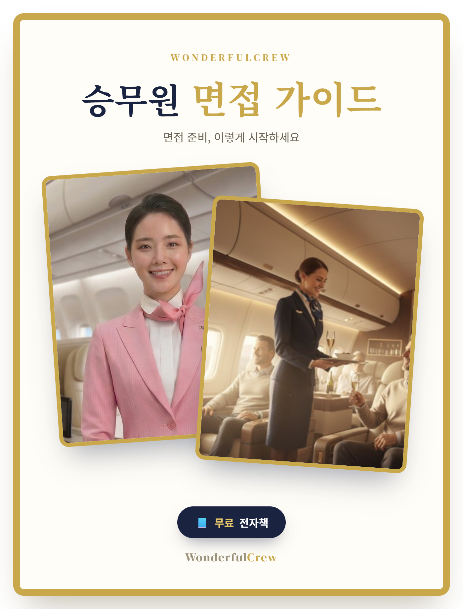
라이브에 참석하시는 모든 분께 무료 전자책 <승무원 면접 가이드>를 드립니다.
전자책 안에는 이런 이야기가 들어있어요
그동안 받아온 질문들 중에서, 실제로 준비 방향을 바꿔놓았던 내용들만 추려서 정리했습니다.
목차1. 서류에서 걸러지는 이유 — 자소서 체크포인트 2. 사진 한 장으로 갈리는 첫인상 — 면접 사진 준비법 3. 그루밍 디테일 — 심사위원이 먼저 보는 것들 4. 실전 기출 질문과 답변 구조 5. 최종 면접에서 떨어지는 사람들의 공통점 6. 그룹 디스커션에서 실제로 보는 것 7. 합격생들이 마지막에 바꾼 것 8. 라이브 다음 날부터의 체크리스트
라이브에서는 이걸 다 보여드릴 거예요
면접 사진부터 영문 CV, 실전 영상 면접과 그룹 디스커션, 파이널 종합 분석까지 — 원더풀크루에서 실제로 어떻게 준비하는지 화면으로 직접 보여드리는 무료 온라인 라이브입니다. 참석하신 모든 분께 전자책도 함께 드립니다.
9월 20일, 한 시간이면 됩니다. 면접 사진부터 CV, 실전 면접 연습까지 전 과정을 한 번에 살펴보고, 참석해 주신 것만으로 <승무원 면접 가이드>를 가져가세요.
지난 글에서 CV 메이커를 처음 소개해 드렸는데, "템플릿이 진짜 몇 종류나 있어요?", "컬러는 어떤 게 있어요?", "자동완성이 정확히 뭘 채워주는 거예요?"라고 물어보시는 분들이 많았어요. 그래서 이번에는 아예 다 보여드리려고 합니다. 템플릿 5종, 컬러 10가지를 한 화면씩 전부 펼쳐 놓고, 회사·직무·기간 몇 글자만 넣었을 때 자동완성이 실제로 얼마나 채워주는지도 예시로 자세히 보여드릴게요.
회사·직무·기간 몇 글자만 넣어도, 나머지는 CV 메이커가 채워줍니다.
딱 두 단계, 모양 고르고 컬러·서체 고르고
사용법은 아주 단순합니다. STEP 1에서 템플릿 모양을 고르고, STEP 2에서 컬러와 서체를 고르면 끝이에요. 아래 실제 화면에서 두 단계를 그대로 보실 수 있습니다.
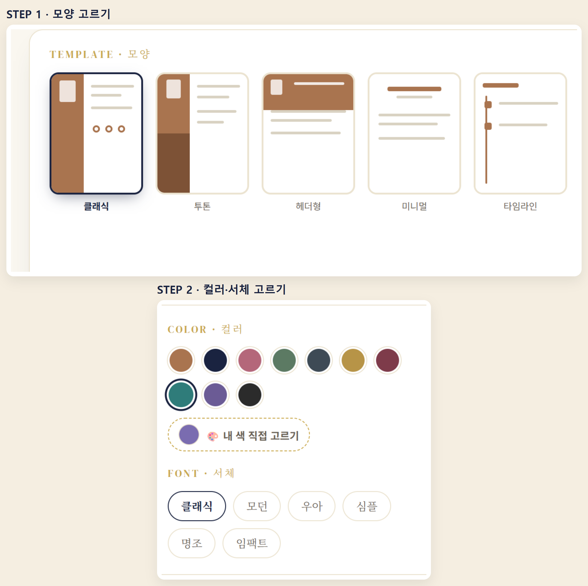
실제 화면 — STEP 1 모양 고르기, STEP 2 컬러·서체 고르기. 이 두 단계가 전부예요.
템플릿 5종, 이렇게 다릅니다
클래식·투톤·헤더형·미니멀·타임라인. 다섯 가지 템플릿은 단순히 색만 다른 게 아니라 레이아웃 자체가 달라요. 클래식과 투톤은 왼쪽에 세로 사이드바를 두고 사진과 연락처를 정리하는 방식이고, 헤더형은 사진과 이름을 위쪽 배너에 가로로 배치합니다. 미니멀은 사이드바 없이 가운데 정렬로 여백을 살린 담백한 구성이고, 타임라인은 경력·학력 옆에 점선이 이어지며 시간 흐름을 보여주는 구조예요. 지원하는 항공사 분위기나 내가 강조하고 싶은 인상에 따라 골라보세요.
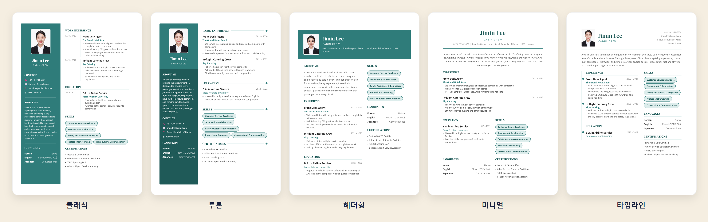
실제 화면 — 클래식·투톤·헤더형·미니멀·타임라인, 다섯 가지 레이아웃을 전부 비교해 보세요.
컬러 10가지, 클릭 한 번으로 바뀌어요
틸(기본)·브라운·네이비·로즈·그린·슬레이트·골드·마룬·퍼플·블랙까지 열 가지 컬러를 제공합니다. 어떤 템플릿을 고르든 컬러 하나만 클릭하면 사이드바·이름·소제목 색이 전부 그 컬러로 바로 바뀌어요. 원하는 색이 없다면 '내 색 직접 고르기'로 나만의 컬러를 만들 수도 있습니다. 외항사 지원용으로는 차분한 네이비나 슬레이트, 조금 더 개성을 드러내고 싶다면 로즈나 골드처럼 톤을 바꿔가며 나에게 맞는 인상을 찾아보세요.
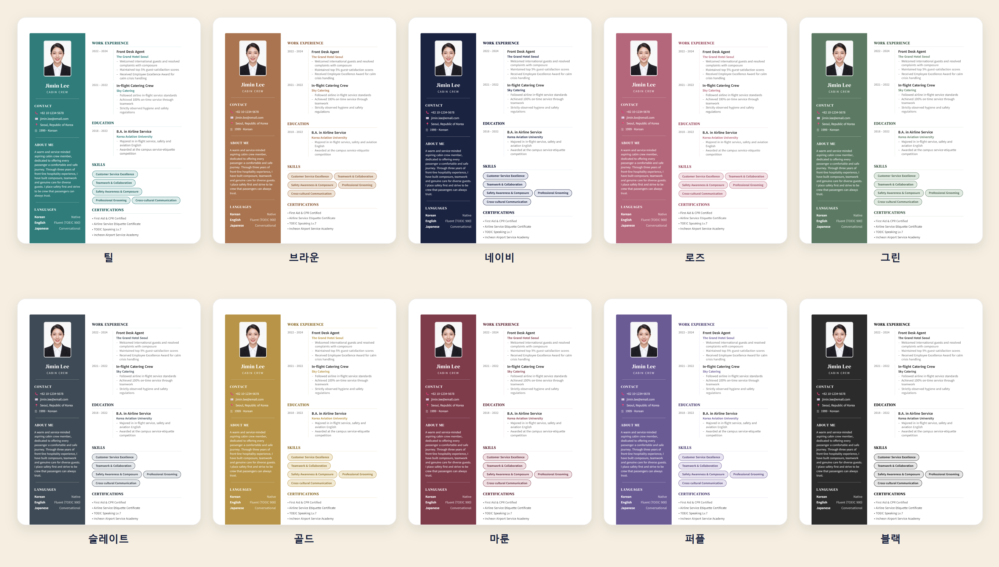
실제 화면 — 컬러 10가지, 전부 같은 이력서에 입혀본 모습입니다.
회사·직무·기간, 세 칸만 채우면 나머지가 자동으로
지원자들이 가장 막막해하는 지점은 사실 디자인이 아니라 '경력을 영어로 어떻게 설명하지'입니다. CV 메이커는 이 부분을 정확히 겨냥합니다. 서비스 경력란에 회사명·직무·근무 기간 딱 세 가지만 입력하고 자동완성 버튼을 누르면, 그 직무에 맞는 영문 업무 설명 문장이 통째로 채워집니다. 예를 들어 "카페 바리스타 · 2022~2023"만 넣으면 "Served guests courteously in a fast-paced environment while keeping a friendly smile"처럼 승무원 자질(서비스 마인드·침착함·팀워크)이 드러나는 문장으로 완성돼요. 자기소개(About)란도 마찬가지로, 지원 포지션만 정해두면 전체 자기소개 문단을 자동으로 채워줍니다. 손으로 한 줄 한 줄 영작할 필요 없이, 빈칸을 세 개만 채우면 이력서 한 단락이 완성되는 셈입니다.
실제 화면 — 직무 예시를 고르거나 직접 입력하면, 승무원 자질이 드러나는 영문 문장이 바로 채워집니다.
자기소개가 막막하면, 단어만 골라도 문장이 완성돼요
경력이 아니라 '나를 표현하는 자기소개' 자체가 막막한 경우도 많습니다. 이럴 땐 문장을 쓰는 대신 '밝은 미소·긍정', '서비스 마인드', '침착한 위기대응', '외국어 소통' 같은 단어 칩을 눌러보세요. 마음에 드는 단어 몇 개를 고르고 '문장 완성'을 누르면, 그 단어들을 엮은 영문 자기소개 세 가지 버전이 한 번에 만들어집니다. 마음에 드는 걸 그대로 쓰거나, 문장 일부만 자유롭게 고쳐도 됩니다. 결국 지원자가 하는 일은 나를 표현하는 단어 몇 개를 고르는 것뿐이고, 문장을 만드는 건 AI가 대신합니다.
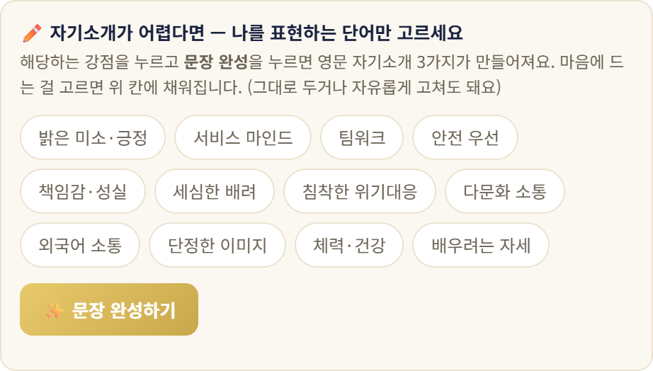
실제 화면 — 단어 몇 개만 고르면, 영문 자기소개 3가지가 그 자리에서 완성됩니다.
이 기능에서는1. 템플릿 5종(클래식·투톤·헤더형·미니멀·타임라인)과 컬러 10가지를 자유롭게 조합해요. 2. 회사·직무·기간 세 칸만 채우면 승무원 자질이 담긴 영문 경력 설명이 자동완성됩니다. 3. 자기소개가 막막할 땐 단어 칩만 골라도 영문 자기소개 3가지가 완성돼요.
이런 분께 특히 좋아요
템플릿과 컬러를 이것저것 비교해보며 나에게 맞는 이력서 톤을 찾고 싶은 분, 경력을 영어로 어떻게 옮겨야 할지 매번 막막한 분, 자기소개 한 문단을 쓰는 데 몇 시간씩 걸리는 분께 CV 메이커가 큰 도움이 됩니다. 원더풀크루에서는 디자인과 영어 표현 걱정을 덜어, 지원자가 정말 집중해야 할 '내용'에만 시간을 쓸 수 있도록 돕고 있습니다.
승무원 면접 준비 전 과정을 함께 보는 무료 라이브
CV 메이커는 원더풀크루가 준비한 여러 단계 중 하나예요. 면접 사진, 메이크업 컬러 찾기, 실시간 이미지 분석, 영상 면접, 롤플레이, 파이널까지 — 항공사 면접에 필요한 전 과정을 라이브로 보여드립니다. 참석하시는 모든 분께 무료 전자책 <승무원 면접 가이드>도 함께 드려요.